Unity
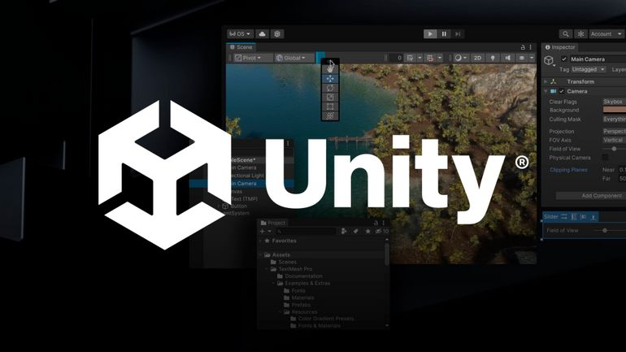
Unity est une plateforme de développement qui permet de créer des jeux vidéo et des applications interactives en 2D ou 3D. Utilisé par des professionnels comme par des amateurs, Unity combine une interface visuelle pour placer des objets, des personnages et des éléments du jeu, et un moteur puissant pour gérer la physique, les animations, et l’intelligence artificielle.
Le tout est contrôlé par du code, principalement en C#. Unity est reconnu pour sa flexibilité, sa communauté active, et ses nombreuses ressources, ce qui en fait un outil idéal pour débuter ou perfectionner ses compétences en développement de jeux.
Unity n’est pas seulement utilisé pour créer des jeux vidéo. Il est également employé pour des simulations complexes, comme des scénarios d’évacuation de bâtiments en cas d’incendie, grâce à la génération de scènes 3D. En outre, Unity permet de concevoir des applications interactives en utilisant son système d’interface utilisateur, le Canvas, qui facilite la création d’interfaces simples et efficaces.
Pourquoi utiliser Unity ?
Accessibilité
Unity est aujourd’hui l’un des moteurs de jeu les plus accessibles. Pendant longtemps, il a été la plateforme préférée des développeurs indépendants, qui ont largement partagé leur code et leurs connaissances.
Contrairement à d’autres moteurs comme Unreal Engine, Unity dispose d’une immense quantité de ressources et de documentation gratuites, ce qui facilite l’apprentissage et la résolution de problèmes pour les débutants comme pour les professionnels. Cela en fait un excellent choix pour quiconque souhaite se lancer dans le développement.
Tarification
Malgré une récente controverse concernant sa tarification, Unity a historiquement maintenu des prix adaptés à la taille des structures qui l’utilisent.
Le modèle de tarification reste flexible : les petites entreprises ou développeurs indépendants bénéficient souvent de versions gratuites ou à faible coût, tandis que les grandes entreprises payent en fonction de leurs revenus ou de leur utilisation. Cela garantit une accessibilité pour les créateurs de différents niveaux, tout en restant compétitif par rapport à d’autres moteurs comme Unreal Engine.
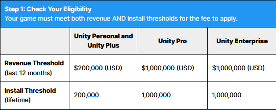
Multi-plateformes
Unity offre un support multi-plateformes étendu, permettant de développer un projet et de le déployer sur une large gamme de dispositifs : PC, consoles (PlayStation, Xbox, Nintendo Switch), mobiles (iOS, Android), ainsi que les plateformes de réalité virtuelle (VR) et augmentée (AR).
D’autre moteurs
Vous pouvez également explorer d’autres moteurs de jeu que Unity :
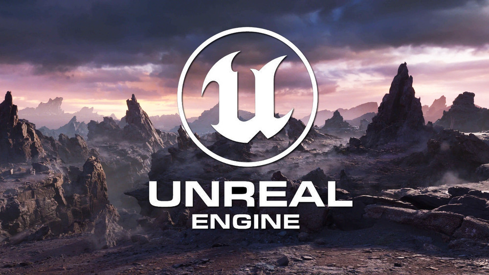
Unreal Engine
-
Avantages : Réputé pour son incroyable qualité graphique, notamment avec Unreal Engine 5, ce moteur est parfait pour les jeux AAA très réalistes. Il offre de puissants outils de rendu et une grande flexibilité pour les grands projets 3D.
-
Inconvénients : La courbe d’apprentissage est plus difficile, et il est moins adapté aux petits projets ou aux jeux 2D, souvent préférés par les développeurs indépendants.
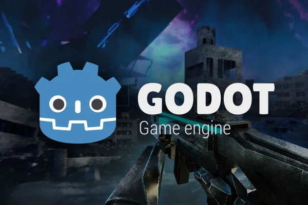
Godot
-
Avantages : Entièrement open source et gratuit, Godot est léger et idéal pour les petits projets 2D. Il est apprécié pour sa simplicité et sa rapidité, ce qui le rend accessible aux débutants.
-
Inconvénients : Moins de ressources et de documentation disponibles par rapport à Unity et Unreal. Ses capacités pour les grands projets 3D sont plus limitées.
Démarrage d’un nouveau projet
Unity Hub
Tout d’abord, lançons l’application Unity Hub pour débuter un nouveau projet. Si vous utilisez la machine virtuelle fournie pour ce cours, vous pouvez simplement cliquer sur l’application Unity Hub sur le bureau. Sinon, vous pouvez télécharger l’application sur le site de Unity à l’adresse suivante : unity.com/fr/download
Il vous sera demandé de créer un compte pour utiliser l’application. Normalement, vous êtes déjà connecté à mon compte pour ce cours, mais sachez que la création d’un compte est gratuite. Cela peut être intéressant si vous souhaitez stocker des projets sur la plateforme Unity Repository ou si vous souhaitez acheter des assets
Une fois Unity Hub lancé, assurez-vous que la dernière version de Unity est installée. Pour ce cours, nous utiliserons la version la plus récente, même si elle est en version bêta, la version 6.

Dans la section “Nouveau projet”, vous pouvez voir qu’Unity vous propose plusieurs choix. Dans notre cas, nous allons créer un projet 2D pour le moment. Pas de panique, créer un projet 2D ou 3D ne présente pas de différence notable. Il n’est pas plus difficile de créer un projet 3D, et de nombreuses notions abordées en 2D s’appliquent également en 3D.
Dans cette liste, vous remarquerez qu’Unity propose plusieurs modèles de démarrage pour des projets en 2D, en réalité virtuelle, ainsi que d’autres projets pédagogiques. Bien que nous ne les utiliserons pas, vous êtes libre d’explorer ce qu’ils proposent.
Après avoir cliqué sur “2D (Built-In Render Pipeline)”, vous devrez donner un nom à votre projet, c’est-à-dire le nom de votre jeu. Vous pouvez également indiquer l’emplacement où le projet sera sauvegardé.
Bienvenue dans votre éditeur
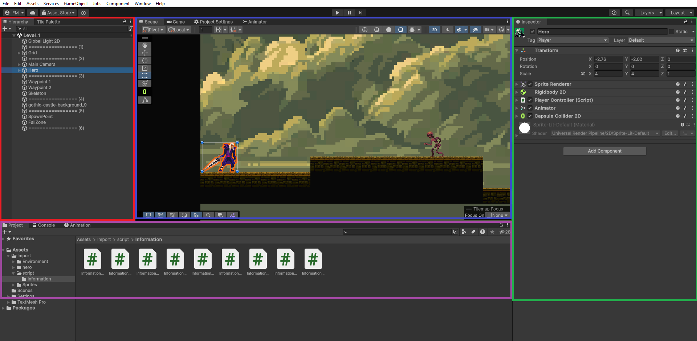
Votre éditeur est ouvert, et vous pouvez maintenant explorer son interface. L’éditeur est divisé en plusieurs fenêtres, et les quatre premières visibles sont : Hiérarchie, Scène, Inspector et Projet. Vous pouvez disposer autant de fenêtres que vous le souhaitez, tant que cela reste ergonomique pour votre utilisation.
Tout d’abord, la section en bleu représente la Scène. Dans Unity, une scène est un espace où vous pouvez créer et arranger les éléments de votre jeu, tels que des objets, des lumières, des caméras et des terrains. Chaque scène peut contenir différents éléments qui contribuent à l’expérience de jeu.
La partie en rouge représente la Hiérarchie. Elle affiche l’ensemble des GameObjects présents dans la scène. Dans Unity, un GameObject est une entité de base qui représente tout ce que vous pouvez placer dans une scène, comme une caméra, un personnage, ou un objet interactif. Chaque GameObject peut contenir un ou plusieurs scripts, qui définissent son comportement.
La partie en vert est l’Inspector. Cette fenêtre affiche des informations sur le GameObject sélectionné. Vous pouvez y voir le nom, le tag, le layer et les scripts associés au GameObject. Le nom identifie le GameObject dans la hiérarchie, le tag permet de le catégoriser pour des interactions spécifiques, et le layer détermine comment il interagit avec d’autres objets. Les scripts ajoutés à un GameObject lui permettent de réagir et d’interagir avec le monde du jeu.
La partie en violet représente le dossier Projet, situé dans l’onglet Assets. Cette section contient tous les éléments de votre jeu, y compris les modèles, les textures, les sons, et tout autre actif que vous utilisez dans votre projet. C’est ici que vous pouvez organiser vos ressources et les retrouver facilement.
Ajout de nouveaux onglets ou de nouvelles fenêtres
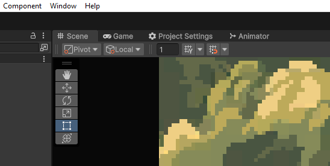
Vous pouvez également noter qu’une fenêtre dans Unity peut contenir un ou plusieurs onglets. Pour ouvrir de nouveaux onglets, cliquez simplement sur Window dans la barre de menus en haut à gauche de l’écran.
Par exemple, si vous souhaitez ajouter l’Animator à la fenêtre qui contient déjà les onglets Scène et Game, il vous suffit de sélectionner Window > Animation > Animator.
Qu’est-ce qu’un GameObject ?
Dans Unity, un GameObject est la base de tout ce que vous voyez dans une scène. Que ce soit un personnage, un objet, une lumière ou même une caméra, tout est un GameObject. Chaque GameObject a un Transform qui détermine où il se trouve, son orientation et sa taille.
Vous pouvez ajouter différents composants ou script à un GameObject pour lui donner des fonctionnalités. Par exemple, un GameObject peut avoir un composant Renderer pour l’afficher ou un composant Collider pour gérer les collisions.
Comment créer un GameObject
Il y a deux façons principales de créer un GameObject dans Unity :
-
Créer un GameObject vide.
- Allez dans le menu en haut, cliquez sur GameObject.
- Choisissez Create Empty. Cela créera un GameObject vide que vous pourrez renommer et personnaliser.
-
Créer un GameObject en glissant un asset.
- Ouvrez la fenêtre Project.
- Trouvez un modèle ou une image dans le dossier Assets.
- Faites glisser cet asset dans la fenêtre Scène ou Hiérarchie. Cela créera automatiquement un GameObject avec les composants nécessaires.
Dans l'exemple, vous pouvez voir le GameObject nommé "Hero". Ce dernier contient six composants différents.
Le composant Transform est présent par défaut sur tous les objets, mais vous remarquerez qu'il est
également possible d'attribuer desvaleurs ou des paramètres à certains composants.
Par exemple, pour le composant Rigidbody, je peux choisir la masse ou la force de gravité appliquée à l'objet.
De plus, dans le script PlayerController du joueur, je peux modifier des paramètres comme la vitesse de déplacement ou la force de saut.
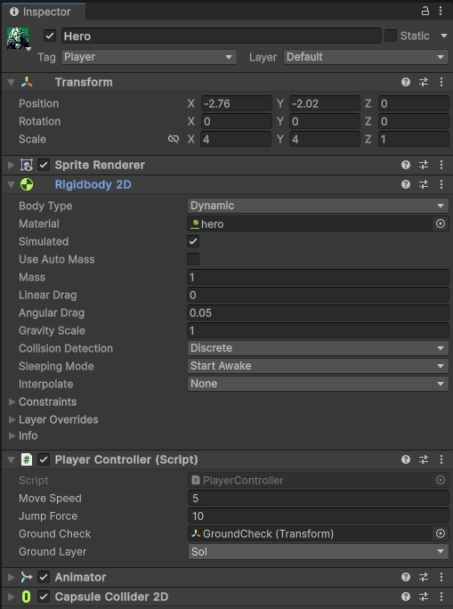
Notre premier script
Un script dans Unity est un fichier écrit en C# qui contient des instructions permettant de contrôler le comportement des GameObjects. Grâce à C#, un langage de programmation orienté objet, vous pouvez créer des logiques de jeu complexes, gérer des interactions et personnaliser les comportements de vos objets.
Pour créer votre premier script dans Unity, suivez ces étapes :
- Ouvrez la fenêtre Project.
- Faites un clic droit dans le dossier Assets et sélectionnez Create > Scripting > MonoBehaviour.
- Nommez le script MonScript.
using UnityEngine;
public class MonScript : MonoBehaviour
{
// Start is called once before the first execution of Update after the MonoBehaviour is created
void Start()
{
}
// Update is called once per frame
void Update()
{
}
}
Les bases de MonoBehaviour
Import / Using
Dans un script C# pour Unity, il est courant de commencer par une ligne d’importation, ici UnityEngine permet d’accéder aux classes et aux fonctionnalités de l’API Unity, telles que les GameObjects, les composants, et d’autres éléments essentiels pour le développement de jeux.
using UnityEngine;
MonoBehaviour / héritage
Ensuite, votre script hérite généralement de la classe MonoBehaviour. Cela signifie que votre script peut utiliser les fonctionnalités spécifiques de Unity, comme les méthodes de cycle de vie du script telle que start ou update. En héritant de MonoBehaviour, votre script peut interagir avec le moteur Unity et répondre à des événements comme le démarrage du jeu ou le rendu d’une image.
public class MonScript : MonoBehaviour
{
// Contenu du script
}
Start
La méthode Start est une fonction spéciale qui est appelée une seule fois au début, lorsque le script est activé pour la première fois. C’est l’endroit idéal pour initialiser des variables ou configurer l’état de votre GameObject.
void Start()
{
// Initialisation des variables
Debug.Log("Le jeu a commencé !");
}
Dans cet exemple, un message sera affiché dans la console lorsque le jeu démarre, ce qui permet de vérifier que le script fonctionne correctement.
Update
La méthode Update est également une fonction spéciale qui est appelée une fois par frame. Elle est utilisée pour mettre à jour la logique du jeu, comme les mouvements du joueur ou les contrôles d’entrée.
void Update()
{
// Déplacement du personnage
float move = Input.GetAxis("Horizontal");
transform.Translate(move * Time.deltaTime, 0, 0);
}
Dans cet exemple, la position du GameObject est mise à jour à chaque frame en fonction des entrées de l’utilisateur, permettant ainsi de déplacer le personnage à gauche ou à droite.
Il est important de noter que la méthode Update est appelée à chaque frame, ce qui signifie qu’elle peut être exécutée de nombreuses fois par seconde. Par conséquent, il est essentiel d’optimiser le contenu de cette méthode pour éviter de ralentir les performances du jeu. Une méthode mal optimisée dans Update peut causer des problèmes de performance, surtout si elle effectue des calculs complexes ou des opérations lourdes.
La méthode Update est appelée une fois par frame. Cela signifie que si votre jeu fonctionne à 60 images par seconde (FPS), la méthode Update sera exécutée 60 fois en une seconde.
FixedUpdate
Pour les actions qui nécessitent un rythme régulier, comme la physique et les mouvements basés sur la physique, il est préférable d’utiliser la méthode FixedUpdate. Cette méthode est appelée à des intervalles fixes, indépendamment du nombre de frames par seconde, ce qui la rend idéale pour les calculs physiques.
void FixedUpdate()
{
// Déplacement basé sur la physique
float move = Input.GetAxis("Horizontal");
Rigidbody rb = GetComponent<Rigidbody>();
rb.MovePosition(rb.position + new Vector3(move, 0, 0) * Time.fixedDeltaTime);
}
Dans cet exemple, FixedUpdate est utilisé pour déplacer un GameObject à l’aide de son composant Rigidbody. En utilisant FixedUpdate, vous assurez que les mouvements physiques restent cohérents, même si le taux de frames du jeu varie. Cela est particulièrement important pour les jeux où la physique joue un rôle central, car cela garantit que le comportement des objets reste prévisible et fluide.
Les variables
Maintenant, voyons comment déclarer des variables sous Unity. Comme C# est un langage orienté objet, il est important de respecter les principes d’encapsulation dans vos classes. Cependant, Unity propose des fonctionnalités supplémentaires. Par exemple, une variable déclarée comme public sera visible et modifiable directement depuis l’éditeur Unity, ce qui permet de l’ajuster facilement sans modifier le code. À l’inverse, une variable privée sera uniquement accessible à l’intérieur du script et ne pourra pas être modifiée dans l’éditeur.
Exemple :
Points de vie du personnage
public int healthPoints = 100;
Ce type de variable est utile lorsqu’on souhaite que les game designers puissent ajuster les points de vie du personnage dans l’éditeur Unity sans toucher au code.
Savoir si le personnage est en l’air
private bool isJumping = false;
Cette variable reste inaccessible dans l’éditeur et n’est modifiable que par le script.
Accéder à une variable privée dans l’éditeur
Il est toutefois possible de rendre une variable privée modifiable dans l’éditeur en utilisant l’attribut [SerializeField]. Cela permet à des variables privées d’être exposées dans l’éditeur sans qu’elles ne deviennent publiques dans le script.
[SerializeField]
private int jumpForce = 10;
Cette approche est souvent utilisée lorsqu’un développeur veut permettre à d’autres membres de l’équipe (comme des game designers) de configurer certains paramètres dans l’éditeur sans donner accès direct au script, garantissant ainsi une encapsulation partielle.
Mise en place du niveau
Commençons par créer un petit niveau en 2D. Pour ce cours, vous pouvez télécharger les ressources nécessaires directement depuis mon site ici ou via ce lien direct vers l’archive : ressource.zip.
Dans cette archive, vous trouverez plusieurs éléments essentiels pour notre projet, notamment des assets et sprites représentant notre héros, ainsi que différents décors que nous appellerons tiles (tuiles) pour le sol et props pour les objets de décor.
Ces ressources graphiques proviennent du site OpenGameArt, une plateforme de partage de ressources libres de droits. Vous avez la possibilité de changer ces ressources si vous préférez utiliser un autre personnage ou style graphique, en fonction de vos goûts et du thème que vous souhaitez pour votre projet.
Dans l’archive, vous trouverez également plusieurs scripts. Certains seront utilisés durant ce cours, tandis que d’autres, que j’ai intitulés “Information”, vous permettront d’explorer des fonctionnalités supplémentaires de Unity, comme la gestion des collisions ou le changement de niveau.
N’hésitez pas à explorer les différents scripts fournis afin de découvrir des fonctionnalités spécifiques à Unity que nous aborderons plus tard dans le cours.
Tilemap
Commençons par créer notre niveau en 2D. Il existe plusieurs méthodes pour cela, mais nous allons utiliser l’outil Tilemap, qui permet de créer une grille où chaque case peut être remplie par une tuile. C’est un moyen simple et efficace de construire des niveaux en 2D.
Étapes pour créer un niveau avec Tilemap :
-
Création d’une Tilemap :
- Allez dans le menu GameObject (rappelez-vous, tout dans Unity est un GameObject).
- Sélectionnez 2D puis Tilemap.
- Vous remarquerez qu’il existe plusieurs types de Tilemap. Nous utiliserons ici une Tilemap Rectangulaire, mais sachez qu’il existe aussi des Tilemaps hexagonales, comme celles utilisées dans des jeux comme Civilization.
-
Création d’une Palette de tuiles :
- Une fois la Tilemap créée, nous devons configurer une Palette. Une palette fonctionne comme en peinture : elle contiendra les blocs que vous utiliserez pour construire votre niveau. Nous allons donc en créer une avec quelques blocs simples.
- Utilisez les ressources du dossier Castle de votre projet. Vous y trouverez un ensemble de sprites, notamment ceux du tileset gothic-castle-tileset, déjà découpés en éléments utilisables.
- Cliquez sur ce tileset dans l’éditeur, et pour conserver le style pixel art, changez son Filter Mode en Point (no filter).
-
Création d’un Dossier pour les Tuiles :
- Créez un dossier nommé Tiles dans votre projet (clic droit > Create > Folder).
- Ensuite, allez dans Window > 2D > Tile Palette pour ouvrir une nouvelle fenêtre.
- Cliquez sur Create New Tile Palette, puis nommez-la (par exemple, Castle).
- Changez la taille des cellules de Automatique à Manuel avec les valeurs x = 1, y = 1, z = 0. Cela permet de conserver des proportions correctes pour les tuiles.
Maintenant, la suite est plutôt simple. Il vous suffit de glisser-déposer un des cubes de votre sprite “Castle” dans la fenêtre Tile Palette. Cela vous permettra de peindre directement la scène avec ce cube.
Ajuster la taille du cube
Si vous avez utilisé le même sprite que moi, vous remarquerez peut-être que le cube est assez petit. Pas de problème ! Voici comment ajuster sa taille :
-
Dans le dossier Tile que nous avons créé, vous verrez le cube que vous avez ajouté à la Tile Palette.
-
Sélectionnez ce cube et regardez dans la fenêtre Inspector. Vous y verrez des options pour modifier les propriétés de la tuile.
-
Cliquez sur Flags, puis choisissez Lock Transform pour bloquer les transformations par défaut.
-
Changez les valeurs de Scale en x = 3.1, y = 3.1, z = 1. Cela devrait redimensionner le cube pour qu’il corresponde à la taille des cases de la grille.
Désormais, votre cube sera bien ajusté et prêt à être utilisé pour peindre votre scène. Vous pouvez commencer à créer votre niveau en dessinant des blocs sur la Tilemap à l’aide de votre Tile Palette.
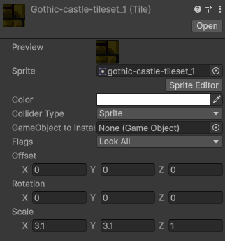
Tilemap Collider 2D
Maintenant que vous avez construit un petit parcours avec les blocs, nous allons ajouter un comportement physique à notre niveau en y appliquant des colliders. Ces colliders permettront à notre héros de ne pas passer à travers les éléments du décor, comme le sol.
Étapes pour ajouter un Collider à la Tilemap :
-
Sélectionner la Tilemap :
- Dans la fenêtre Hiérarchie, cliquez sur l’objet Tilemap.
-
Ajouter un composant Tilemap Collider :
- Dans la fenêtre Inspector, cliquez sur Add Component.
- Utilisez l’outil de recherche pour trouver et ajouter le composant TilemapCollider2D.
Maintenant, votre niveau est reconnu comme une surface solide, permettant ainsi à notre futur héros de marcher sur le sol sans traverser les blocs.
Ajouter un matériau physique
Pour aller plus loin, nous allons personnaliser le comportement physique de notre sol, en ajoutant une friction ou un rebond. Par exemple, si vous souhaitez que le sol ait un effet particulier, comme une surface glissante ou un rebond (comme une trampoline), vous devez créer un Matériau Physique.
-
Créer un Matériau Physique 2D :
- Dans le dossier Tile, faites un clic droit et sélectionnez Create > 2D > Physics Material 2D.
- Nommez ce nouveau matériau, par exemple, SolEnPierre.
-
Configurer le matériau :
- Dans l’inspecteur, vous verrez deux propriétés importantes : Friction et Bounciness.
- Pour un sol solide sans glissement, mettez la friction à 0 et la bounciness (rebond) à 0 également.
-
Appliquer le Matériau :
- Glissez le matériau que vous venez de créer dans la section Material du TilemapCollider2D dans l’inspecteur.
Ainsi, vous avez appliqué une physique à votre niveau. Vous pouvez expérimenter avec des valeurs différentes pour la friction (par exemple, une valeur élevée simule la glace ou la neige) ou pour le rebond (par exemple, pour simuler une trampoline ou une surface élastique).
Création du joueur
Il semble que nous avons oublié l’élément principal : notre héros ! Pour l’ajouter à la scène, commencez par faire un glisser-déposer du sprite hero-idle-1 (disponible dans le dossier Hero) directement dans la scène. Une fois ajouté, renommez le GameObject créé en Hero afin de bien l’identifier. Vous noterez que ce GameObject contient déjà un composant Sprite Renderer, qui permet d’afficher l’image de notre héros dans la scène.
Cependant, vous remarquerez peut-être que votre héros est un peu petit. Pas de souci ! Vous pouvez facilement ajuster sa taille. Pour cela, sélectionnez l’objet Hero dans la hiérarchie, puis dans la section Transform de l’inspecteur, modifiez les valeurs de Scale pour agrandir votre héros. Par exemple, augmentez les valeurs x et y pour que votre personnage ait une taille adaptée à la scène, comme 3,1 pour chaque axe.
Bien, continuons en ajoutant un Collider 2D en forme de capsule et un Rigidbody 2D à notre héros. Le Collider permettra de définir la zone de collision de notre personnage, tandis que le Rigidbody appliquera les règles de la physique à notre héros, comme la gravité ou la vitesse de déplacement.
Ajout du Capsule Collider 2D
Tout d’abord, sélectionnez le GameObject Hero dans votre hiérarchie. Ensuite, dans l’inspecteur, cliquez sur Add Component, recherchez Capsule Collider 2D, et ajoutez-le. Ce collider délimitera la zone autour de notre personnage avec laquelle il interagit physiquement.
Une fois ajouté, vous pouvez modifier la taille et la position de la boîte de collision. Cliquez sur Edit Collider, et vous verrez un cercle vert autour de votre personnage. Ajustez-le pour qu’il encadre bien la forme du héros. Si vous préférez des ajustements manuels, vous pouvez directement changer les valeurs dans les paramètres Size et Offset du collider, afin de correspondre précisément à la taille de votre sprite.
Ajout du Rigidbody 2D
Toujours dans l’inspecteur, ajoutez maintenant un Rigidbody 2D à votre personnage. Ce composant lui permettra d’interagir avec la gravité et d’avoir une vitesse. Une fois le Rigidbody ajouté, activez l’option Freeze Rotation sur l’axe Z. Cela évitera que votre personnage ne bascule ou ne se retourne sur lui-même pendant le jeu. Sinon, vous risqueriez de voir votre héros tomber en avant ou se retourner, ce qui peut être amusant, mais pas très pratique pour la jouabilité.
Script PlayerController
using System.Collections;
using System.Collections.Generic;
using UnityEngine;
public class PlayerController : MonoBehaviour
{
// Variables pour la gestion du mouvement
public float moveSpeed = 5f; // Vitesse de déplacement
private Rigidbody2D rb; // Référence au Rigidbody2D
private SpriteRenderer spriteRenderer; // Référence au SpriteRenderer
void Start()
{
// Récupère les composants Rigidbody2D et SpriteRenderer attachés au GameObject
rb = GetComponent<Rigidbody2D>();
spriteRenderer = GetComponent<SpriteRenderer>();
}
void Update()
{
Move(); // Appelle la méthode de mouvement
}
void Move()
{
// Déplacement horizontal
float moveInput = Input.GetAxis("Horizontal"); // Récupère l'entrée horizontale
rb.velocity = new Vector2(moveInput * moveSpeed, rb.velocity.y); // Applique la vitesse de déplacement
// Flip du personnage (face à gauche/droite)
if (moveInput > 0)
{
spriteRenderer.flipX = false; // Face à droite
}
else if (moveInput < 0)
{
spriteRenderer.flipX = true; // Face à gauche
}
}
}
Le script est un contrôleur basique pour déplacer un personnage dans Unity. Il utilise deux composants principaux du personnage : le Rigidbody2D pour la physique et le SpriteRenderer pour afficher et manipuler le sprite du personnage. Explication du script
-
Déplacement horizontal
- Le script récupère les entrées de l’utilisateur avec la fonction Input.GetAxis(“Horizontal”). Ici, Unity utilise des axes prédéfinis pour représenter les touches de direction : la flèche gauche et droite ou les touches “A” et “D” sur le clavier.
- La vitesse de déplacement est déterminée par la variable moveSpeed. Le résultat du mouvement est calculé en multipliant l’entrée de l’utilisateur par cette vitesse.
-
Rigidbody2D
- Le Rigidbody2D est le composant utilisé pour gérer la physique du personnage, notamment sa position et sa vitesse.
- La ligne rb.velocity = new Vector2(moveInput * moveSpeed, rb.velocity.y); applique cette vitesse au personnage en modifiant sa vitesse horizontale. rb.velocity.y permet de conserver la vitesse verticale existante (utile si le personnage saute).
-
SpriteRenderer et le “Flip”
- Le SpriteRenderer est ce qui permet d’afficher le sprite du personnage dans la scène. Dans ce script, il est utilisé pour “retourner” l’image du personnage lorsque celui-ci change de direction (vers la gauche ou la droite).
- Lorsque moveInput est positif (le joueur appuie vers la droite), spriteRenderer.flipX est mis à false pour orienter le personnage vers la droite. Quand le joueur appuie vers la gauche (moveInput négatif), spriteRenderer.flipX devient true, ce qui retourne le sprite pour qu’il regarde vers la gauche.
Les Inputs
Les inputs sont simplement les actions du joueur, comme appuyer sur les touches du clavier ou les boutons de la manette. Unity fournit un système intégré qui mappe automatiquement ces actions à des axes. L’axe “Horizontal” correspond aux mouvements gauche/droite et renvoie une valeur entre -1 et 1, où :
- -1 représente un mouvement vers la gauche (quand on appuie sur “flèche gauche” ou “A”),
- 0 signifie aucune action,
- 1 représente un mouvement vers la droite (quand on appuie sur “flèche droite” ou “D”).
Cela permet de gérer facilement les mouvements dans le jeu sans devoir gérer directement les touches.
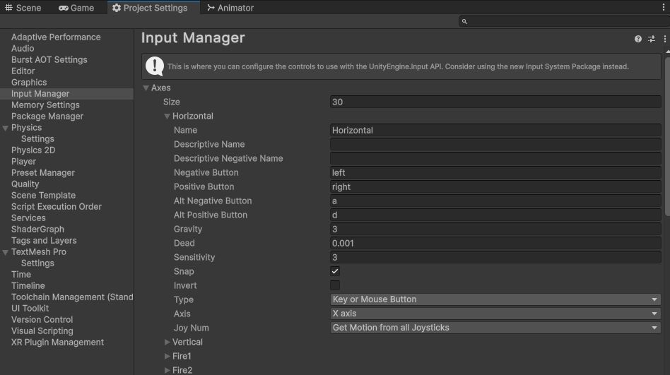
L’Input Manager d’Unity est un outil qui gère toutes les entrées du joueur (clavier, souris, manette, etc.) en les associant à des actions spécifiques dans le jeu. Il simplifie la gestion des commandes en utilisant des axes (comme “Horizontal” pour les mouvements gauche/droite) plutôt que de devoir coder chaque touche individuellement.
Modifier les Inputs dans l’Input Manager
Pour modifier les touches associées à cet axe ou en créer de nouvelles :
-
Ouvre Edit > Project Settings > Input Manager.
-
Dans la section Axes, tu verras une liste des axes existants, comme “Horizontal” et “Vertical”.
-
Pour modifier l’axe “Horizontal”, clique dessus et ajuste les touches dans les champs Positive Button (ex. “d”) et Negative Button (ex. “a”).
Animation du personnage
void Move()
{
if (!canMove)
{
return;
}
// Déplacement horizontal
float moveInput = Input.GetAxis("Horizontal");
rb.velocity = new Vector2(moveInput * moveSpeed, rb.velocity.y);
// Flip du personnage (face à gauche/droite) avec SpriteRenderer
if (moveInput > 0)
{
spriteRenderer.flipX = false; // Face à droite
}
else if (moveInput < 0)
{
spriteRenderer.flipX = true; // Face à gauche
}
// Mettre à jour l'animation si tu as un Animator
if (animator != null)
{
animator.SetFloat("Speed", Mathf.Abs(moveInput));
}
}
Pour commencer la création de notre animation de personnage, voici les étapes détaillées.
Ajout du composant Animator :
-
Dans le dossier où se trouve ton personnage (ici le dossier “hero”), clique sur le GameObject qui représente le héros. Nous allons ajouter un composant Animator à ce personnage.
-
Sélectionne ton personnage et, dans l’inspecteur à droite, clique sur Add Component.
-
Recherchez et ajoutez le composant Animator.
-
Crée ensuite un Animator Controller que tu peux nommer HeroAnimator. Ce contrôleur va gérer toutes les animations de ton personnage. Glisse ce contrôleur dans le champ “Controller” du composant Animator.
Création de l’animation Idle (repos)
-
Ouvre la fenêtre Animation en allant dans Window > Animation > Animation. Si elle n’est pas visible, elle apparaîtra en bas.
-
Sélectionne ton personnage dans la hiérarchie, puis clique sur Create dans la fenêtre Animation pour créer une nouvelle animation que tu vas nommer hero-idle.
-
Tu verras une timeline apparaître. Fais un drag & drop des images que tu veux utiliser pour l’animation “idle” dans la timeline. Dans ce cas, les images 1, 2, 3, 4, 3, 2, 1 (pour créer un effet de boucle).
-
Ajuste l’intervalle entre les images à 0.10 secondes pour une animation fluide. Si tu veux une animation plus lente, tu peux augmenter cet intervalle.
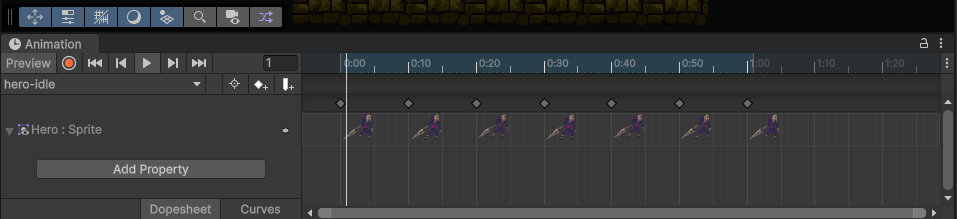
Une fois ton animation “idle” terminée, tu peux répéter le même processus pour les autres animations, comme celles de déplacement.
-
Crée une nouvelle animation dans la fenêtre Animation en cliquant sur Create New Clip.
-
Comme pour l’animation idle, fais un drag & drop des sprites de déplacement dans la timeline pour créer cette nouvelle animation.
| 1 | 2 | 3 | 4 | 5 | 6 | 7 |
|---|---|---|---|---|---|---|
 |  | 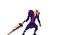 |  |  | 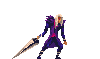 | 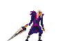 |
Le principe derrière ces animations est similaire à celui d’un dessin animé : on affiche une série d’images (sprites) les unes à la suite des autres à un certain intervalle pour donner l’illusion du mouvement. Plus l’intervalle est court, plus l’animation sera fluide et rapide.
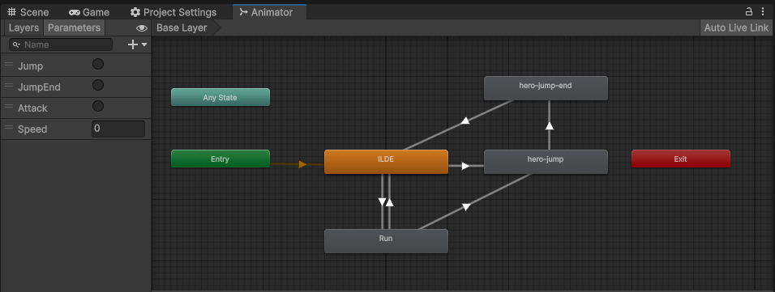
Pour ajouter nos animations à l’Animator du personnage, commençons par l’animation idle-hero en tant qu’animation de base. Voici les étapes détaillées :
-
Définir l’animation idle comme animation de base
- Dans l’Animator (que tu as précédemment lié à ton personnage), tu remarqueras un état appelé Entry. C’est l’état initial où commence l’animation de ton personnage.
- Fais un drag & drop de l’animation idle-hero dans l’Animator. Elle se connectera automatiquement à Entry, ce qui signifie que c’est l’animation qui sera jouée au démarrage du jeu.
-
Ajouter et lier l’animation de course
- Ajoute également l’animation hero-run dans l’Animator en faisant un drag & drop similaire.
- Pour que le personnage puisse passer de l’animation “idle” à l’animation de course, nous devons créer une transition entre ces deux états.
- Clic droit sur l’animation idle-hero, puis sélectionne Make Transition. Une flèche apparaîtra ; clique ensuite sur hero-run pour créer la transition.
- Répète cette étape en faisant une transition de hero-run vers idle-hero, pour que le personnage revienne à son état de repos après avoir couru.
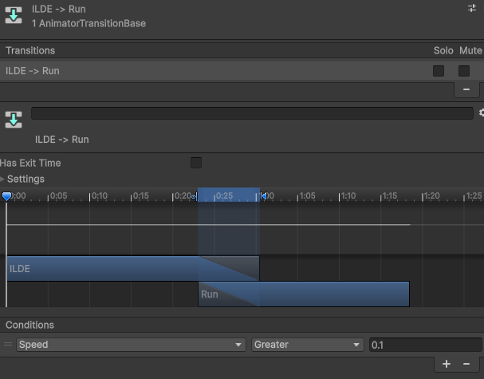
Création d’un paramètre pour déclencher les animations
Pour que l’animation de course soit déclenchée par le déplacement du personnage, nous allons utiliser un paramètre dans l’Animator. Il existe quatre types de paramètres dans Unity :
- Float : une valeur décimale, utile pour mesurer des valeurs continues comme la vitesse du personnage.
- Int : un nombre entier, pratique pour compter des actions ou des états numériques.
- Bool : une valeur booléenne (true/false), utilisée pour des états comme “est en train de sauter” ou “attaque en cours”.
- Trigger : un booléen qui revient automatiquement à false après son activation, idéal pour des actions ponctuelles comme une attaque ou un saut.
Dans ce cas, nous allons utiliser un paramètre de type Float pour la vitesse.
Ajouter le paramètre Float “Speed”
-
Ouvre l’onglet Parameters dans l’Animator, clique sur le +, puis sélectionne Float. Nomme ce paramètre Speed.
-
Ensuite, retourne dans les transitions que tu as créées (idle vers run et run vers idle).
- Dans la transition idle → run, ajoute une condition : Speed > 0.1. Cela signifie que dès que la vitesse du personnage dépasse 0.1, l’animation de course sera déclenchée.
- Dans la transition run → idle, mets la condition Speed < 0.1 pour que le personnage revienne à l’état idle lorsqu’il arrête de se déplacer.
Supprimer l’exit time
Par défaut, Unity ajoute un exit time à chaque transition d’animation, ce qui signifie que l’animation doit se terminer avant de passer à la suivante. Dans notre cas, nous ne voulons pas que l’animation de course ou de repos s’arrête avant que le changement ait lieu. Pour cela, il suffit de :
- Sélectionner la transition (idle vers run et run vers idle).
- Désactiver l’option Has Exit Time.
En suivant ces étapes, ton personnage pourra passer en douceur entre les animations de repos et de course en fonction de sa vitesse, tout en évitant les délais inutiles dus à l’exit time.
Pour déclencher l’animation de course en fonction du déplacement de notre personnage, il est essentiel d’intégrer l’Animator dans notre script de contrôleur. Voici les étapes détaillées à suivre pour ajouter et utiliser l’Animator afin de déclencher l’animation de course.
Ajout d’une variable Animator
Commence par déclarer une variable Animator dans ton script. Cette variable sera utilisée pour contrôler les animations du personnage. Cela permet au script de communiquer avec l’Animator attaché à l’objet du personnage.
private Animator animator; // Pour gérer les animations
Récupérer l’Animator avec GetComponent
Dans la méthode Start(), tu dois récupérer l’instance de l’Animator attachée à l’objet. Le GetComponent<Animator>() permet de rechercher le composant Animator et de le lier à la variable que nous venons de déclarer. Cela permet de manipuler l’animation à partir du code.
void Start()
{
animator = GetComponent<Animator>(); // Récupérer l'Animator pour gérer les animations
}
Déclencher l’animation en fonction de la vitesse
L’animation de course sera déclenchée en fonction de la valeur d’entrée (Input) du joueur. Pour cela, nous allons définir la valeur du Float “Speed” dans l’Animator. La valeur sera basée sur l’entrée horizontale du joueur (le déplacement), qui peut être positive ou négative, selon qu’il avance ou recule.
Nous utilisons la fonction Mathf.Abs() pour récupérer la valeur absolue de la vitesse de déplacement. Cela permet de s’assurer que la valeur de Speed est toujours positive, même si le joueur recule (ce qui donnerait une valeur négative sans cette précaution). L’Animator peut ainsi ajuster les animations en fonction de la rapidité du mouvement, indépendamment de la direction.
void Move()
{
if( !canMove )
{
return ;
}
// Déplacement horizontal
float moveInput = Input.GetAxis("Horizontal");
rb.velocity = new Vector2(moveInput * moveSpeed, rb.velocity.y);
// Flip du personnage (face à gauche/droite)
if (moveInput > 0)
transform.localScale = new Vector3(Mathf.Abs(transform.localScale.x), transform.localScale.y, transform.localScale.z); // Face à droite
else if (moveInput < 0)
transform.localScale = new Vector3(-Mathf.Abs(transform.localScale.x), transform.localScale.y, transform.localScale.z); // Face à gauche
// Mettre à jour l'animation si tu as un Animator
if (animator != null)
{
animator.SetFloat("Speed", Mathf.Abs(moveInput));
}
}
Gestion du saut
private bool isGrounded = true; // Vérifie si le joueur est au sol
private bool isJumping = true ;
public float jumpForce = 10f;
// Pour les couches avec lesquelles le joueur interagit
public Transform groundCheck;
public LayerMask groundLayer;
Explication des variables ajoutées
-
isGrounded :
- Cette variable booléenne vérifie si le personnage est au sol. Elle est utilisée pour s’assurer que le personnage ne peut sauter que lorsqu’il est en contact avec le sol (et pas en l’air). La détection se fait grâce à une méthode qui vérifie les collisions avec un objet défini comme “sol”.
-
isJumping :
- Une autre variable booléenne qui indique si le personnage est en train de sauter. Elle peut être utilisée pour bloquer certaines actions ou animations tant que le saut n’est pas terminé. Ici, elle n’est pas activement utilisée dans la méthode Jump(), mais pourrait servir pour des animations plus complexes.
-
jumpForce :
- C’est une variable float qui détermine la force appliquée lors du saut. Plus cette valeur est élevée, plus le personnage sautera haut. Elle est appliquée sur l’axe vertical (Y) dans la physique du personnage.
-
groundCheck :
- Un Transform qui représente un point de contrôle situé sous le personnage pour vérifier s’il touche le sol. C’est la position qui est utilisée pour la détection dans la méthode Physics2D.OverlapCircle().
-
groundLayer :
- Un LayerMask qui détermine quelles couches de la scène sont considérées comme sol pour la détection de collision. Seules les couches associées à ce LayerMask seront prises en compte lors de la vérification si le personnage est au sol.
“Layer” dans Unity
Dans Unity, un Layer est un système de classification permettant de regrouper différents objets. Chaque objet dans Unity peut être assigné à une ou plusieurs couches (Layers). Les couches sont souvent utilisées pour :
-
Gérer les collisions : En définissant des interactions spécifiques entre certaines couches (par exemple, définir une couche pour le “sol”, une autre pour les “joueurs”, etc.).
-
Optimiser le rendu : Par exemple, vous pouvez définir que certaines couches ne sont pas visibles par certaines caméras.
-
Détecter des objets spécifiques : Grâce à l’utilisation de LayerMasks, on peut demander à Unity d’ignorer certaines couches dans les calculs physiques, comme ici avec le groundLayer, qui est utilisé pour détecter uniquement les objets au sol.
void Jump()
{
// Vérifie si le joueur est au sol avant de sauter
isGrounded = Physics2D.OverlapCircle(groundCheck.position, 0.2f, groundLayer);
// Sauter si le joueur appuie sur le bouton de saut et qu'il est au sol
if (Input.GetButtonDown("Jump") && isGrounded)
{
rb.velocity = new Vector2(rb.velocity.x, jumpForce);
// Animation de saut
if (animator != null)
{
animator.SetTrigger("Jump");
}
}
}
Explication de la méthode Jump()
-
Détection du sol avec Physics2D.OverlapCircle :
- Avant de permettre au personnage de sauter, la méthode vérifie s’il est bien au sol grâce à Physics2D.OverlapCircle. Cette fonction crée un petit cercle invisible à la position spécifiée par groundCheck (souvent placé sous les pieds du personnage). Le cercle vérifie s’il entre en collision avec quelque chose appartenant à la couche définie par groundLayer. Si c’est le cas, la variable isGrounded est mise à true.
-
Sauter avec un appui sur “Jump” :
- Si le joueur appuie sur la touche définie pour le saut (via Input.GetButtonDown(“Jump”)) et que le personnage est bien au sol (vérifié par isGrounded), alors un saut est déclenché.
- Le saut est réalisé en modifiant la vélocité verticale du personnage, grâce à cette ligne :
rb.velocity = new Vector2(rb.velocity.x, jumpForce);
// Cela applique une force verticale vers le haut égale à jumpForce.
- Déclenchement de l’animation de saut :
- Si un Animator est assigné au personnage, cette partie du code permet de déclencher l’animation de saut en utilisant le paramètre Trigger de l’Animator :
SetTrigger("Jump");
// Cela lance l'animation de saut dès que le personnage quitte le sol.
En résumé, la méthode Jump() vérifie d’abord si le personnage est au sol avant de lui permettre de sauter, applique une force verticale pour le saut, et déclenche une animation de saut si elle est disponible.
void OnDrawGizmos()
{
if (groundCheck != null)
{
// Définir la couleur des Gizmos à rouge
Gizmos.color = Color.red;
// Dessiner un cercle au point de vérification du sol
Gizmos.DrawWireSphere(groundCheck.position, 0.2f);
}
}
Gizmo
Les Gizmos sont des éléments visuels utilisés dans l’éditeur Unity pour aider à la visualisation des objets ou des composants sans influencer le jeu lui-même. Ils permettent de mieux comprendre comment les objets interagissent entre eux ou d’avoir un aperçu des propriétés invisibles, comme des zones de détection ou des trajectoires.
Exemples courants de Gizmos dans Unity
-
Colliders : Comme tu l’as mentionné, les zones vertes visibles autour des objets qui ont des colliders (Box Collider, Capsule Collider, etc.) sont des Gizmos. Elles permettent de visualiser la taille et la forme des colliders qui régissent les interactions physiques des objets.
-
Lumières : Quand tu ajoutes une lumière dans une scène, Unity dessine un Gizmo en forme de cône pour les lumières directionnelles ou un cercle pour les lumières ponctuelles, indiquant la portée et l’intensité de la lumière.
-
Caméras : Les caméras ont leur propre Gizmo qui montre leur champ de vision (le frustum). Cela te permet de visualiser ce que la caméra capture.
-
Points de Waypoint : Lorsque tu définis des trajectoires pour des objets en mouvement (par exemple des ennemis qui patrouillent), Unity peut utiliser des Gizmos pour afficher les points que ces objets doivent atteindre.
-
Raycast : Si tu utilises des Raycasts pour détecter des objets ou des surfaces, tu peux dessiner les rayons en utilisant des Gizmos, ce qui permet de visualiser les trajectoires des rayons.
Changement de niveau
Nous allons maintenant explorer une fonctionnalité essentielle dans tout jeu vidéo : le changement de niveau. Imaginez que vous jouez à un jeu de plateforme et, après avoir complété le premier niveau, vous devez passer au suivant. Pour cela, Unity propose des outils simples permettant de gérer la transition entre différentes scènes de jeu.
Cela inclut la création de nouvelles scènes, la gestion des paramètres de scène via les Build Settings, et l’utilisation de triggers pour détecter des événements comme l’entrée du joueur dans une zone de sortie.
Créer une nouvelle scène dans Unity et gestion du changement de niveaux
- Créer une nouvelle scène : Pour créer une nouvelle scène dans Unity :
- Allez dans la barre de menu, puis cliquez sur File > New Scene.
- Une nouvelle scène sera créée. Vous pouvez ensuite la sauvegarder en allant dans File > Save As.
- Donnez-lui un nom, par exemple level_2, puis enregistrez-la dans votre dossier Scenes.
Votre nouvelle scène est prête à être modifiée et personnalisée pour votre jeu.
- Ajouter une scène au Build Settings : Pour que Unity puisse charger cette scène dans le jeu, vous devez l’ajouter à vos Build Settings :
- Cliquez sur File > Build Settings.
- Une fenêtre s’ouvre, cliquez sur Add Open Scenes pour ajouter la scène que vous venez de créer (si elle est ouverte).
- Une fois ajoutée, la scène aura un index associé. Vous pouvez également la réorganiser ou la renommer ici.
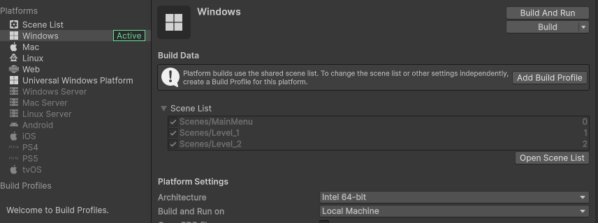
Changement de scène avec un SceneLoader
Unity propose deux façons principales de charger des scènes : par nom ou par index.
- Charger par nom :
using UnityEngine.SceneManagement;
public class SceneLoader : MonoBehaviour
{
public void LoadSceneByName(string sceneName)
{
SceneManager.LoadScene(sceneName); // Change vers la scène nommée
}
}
Pour appeler cette méthode, passez simplement le nom exact de la scène, comme “level_2”.
- Charger par index :
using UnityEngine.SceneManagement;
public class SceneLoader : MonoBehaviour
{
public void LoadSceneByIndex(int sceneIndex)
{
SceneManager.LoadScene(sceneIndex); // Change vers la scène selon l'index dans le Build Settings
}
}
Vous pouvez charger une scène en fonction de son index tel qu’il apparaît dans les Build Settings.
Boîte de collision Trigger pour changement de scène
- Créer un script de changement de scène avec un Trigger :
- Voici un exemple de script qui utilise une boîte de collision Trigger pour changer de scène :
using UnityEngine;
using UnityEngine.SceneManagement;
public class SceneChangeTrigger : MonoBehaviour
{
public string sceneToLoad; // Nom de la scène à charger
// Méthode appelée quand un autre objet entre dans la zone de Trigger
void OnTriggerEnter2D(Collider2D other)
{
// Vérifie si l'objet qui entre est le joueur
if (other.CompareTag("Player"))
{
SceneManager.LoadScene(sceneToLoad); // Change vers la scène spécifiée
}
}
}
- OnTriggerEnter2D est déclenché lorsque quelque chose entre dans la zone du Trigger. Ici, on vérifie si l’objet qui entre est le joueur (souvent marqué par un tag).
-
Types de méthodes de collision Trigger :
-
Il existe trois types principaux de méthodes associées aux collisions Trigger :
- OnTriggerEnter2D : Appelée lorsque le joueur (ou un autre objet) entre dans la zone de Trigger.
- OnTriggerExit2D : Appelée lorsque le joueur (ou un autre objet) sort de la zone de Trigger.
- OnTriggerStay2D : Appelée à chaque frame où le joueur (ou un autre objet) reste à l’intérieur de la zone de Trigger. Différence entre Trigger et Collider sans Trigger :
-
Un collider non trigger (comme un BoxCollider2D sans l’option Is Trigger) fait que les objets interagissent physiquement (ex. : ils se bloquent, s’arrêtent, etc.). Il gère les collisions réelles entre objets.
-
Un collider avec Trigger (où l’option Is Trigger est activée) ne bloque pas les objets mais détecte simplement leur entrée, sortie, ou présence dans une zone sans interaction physique directe.
-
En résumé, les Triggers sont idéals pour détecter les entrées et sorties d’objets (comme pour changer de scène), tandis que les Colliders sans Trigger gèrent les interactions physiques comme les collisions dans le jeu.
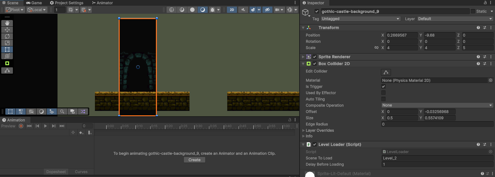
Ajout de monstres
Dans la majorité des jeux vidéo, nous sommes confrontés à des ennemis, qui ajoutent des défis supplémentaires pour atteindre les objectifs. Ici, nous allons ajouter un squelette ennemi qui patrouille de gauche à droite, similaire aux ennemis dans des jeux comme Super Mario.
Le concept est simple : l’ennemi doit se déplacer entre deux points définis, tout en infligeant des dégâts au joueur lorsqu’il entre en contact avec lui. Ce type d’ennemi est commun dans les jeux de plateforme et permet d’ajouter un obstacle dynamique que le joueur doit éviter ou combattre.
Étapes à suivre :
-
Ajouter l’ennemi squelettique : Vous pouvez récupérer le squelette à partir des ressources fournies dans votre projet Unity.
-
Créer une animation de marche : Comme pour un personnage joueur, l’ennemi aura besoin d’une animation de marche pour rendre ses mouvements réalistes et immersifs lorsqu’il patrouille.
-
Définir un comportement de patrouille : Le squelette se déplacera entre deux points de repère (ou “waypoints”) définis dans la scène.
-
Infliger des dégâts au contact : À l’instar des Goombas dans Mario, l’ennemi infligera des dégâts dès qu’il entre en collision avec le joueur.
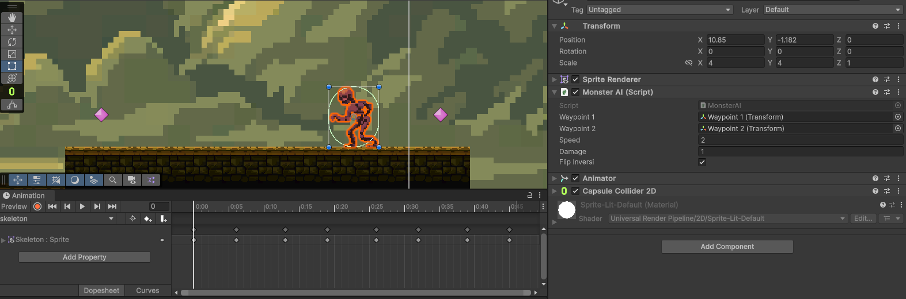
Cette partie du tutoriel est très similaire à ce que nous avons fait précédemment avec l’animation du personnage principal. Maintenant que vous avez déjà acquis une bonne compréhension des étapes, vous pouvez essayer de recréer le processus par vous-même pour voir si vous avez tout retenu.😉
Ajouter l’ennemi squelettique
-
Récupérez le sprite du squelette à partir des ressources du projet et faites-le glisser dans la scène pour qu’il devienne visible.
-
Assurez-vous que l’ennemi est correctement positionné au sol ou à l’endroit souhaité pour commencer à patrouiller.
Créer une Animation de Marche
-
Ouvrez la fenêtre Animation dans Unity (Fenêtre > Animation > Animation).
-
Sélectionnez le squelette dans la scène, puis cliquez sur le bouton Créer dans la fenêtre Animation.
-
Nommez cette animation “Squelette-Marche”.
-
Ensuite, dans la chronologie, faites glisser les différentes images clés (sprites) de l’animation de marche dans l’ordre souhaité. Le squelette se déplacera avec une boucle de ces images pour donner l’impression qu’il marche.
-
Ajustez la vitesse de l’animation en définissant l’intervalle de temps entre les images à environ 0,1 seconde pour une animation fluide, ou plus si vous souhaitez un mouvement plus lent.
Créer un Animator pour le Squelette
-
Une fois l’animation créée, Unity va automatiquement créer un composant Animator pour votre squelette.
-
Vous pouvez renommer cet Animator en “SqueletteAnimator” pour garder une organisation claire dans vos fichiers.
-
Ouvrez l’Animator pour voir la nouvelle animation “Squelette-Marche” comme l’état de base.
Script MonsterAI
Le script, intitulé MonsterAI, gère les déplacements d’un monstre entre deux points (ou waypoints) et inflige des dégâts au joueur lorsqu’il entre en collision avec lui.
public Transform waypoint1; // Premier waypoint
public Transform waypoint2; // Deuxième waypoint
public float speed = 2f; // Vitesse de déplacement
public int damage = 10; // Dégâts infligés au joueur
Déclarations de variables public
-
waypoint1 et waypoint2 sont des objets de type Transform, c’est-à-dire des points de référence dans l’espace. Le monstre va alterner entre ces deux positions.
-
speed détermine la vitesse à laquelle le monstre se déplace entre les waypoints.
-
damage est le montant de dégâts que le monstre inflige au joueur s’il entre en collision avec lui.
private Transform targetWaypoint; // Waypoint cible actuel
private SpriteRenderer spriteRenderer; // Pour flipper le sprite
Variables privées
-
targetWaypoint est la cible actuelle du monstre. Il alterne entre waypoint1 et waypoint2.
-
spriteRenderer est utilisé pour changer la direction dans laquelle le sprite du monstre fait face (gauche ou droite) en utilisant la fonction flipX.
void Start()
{
// Initialement, le monstre se déplace vers le premier waypoint
targetWaypoint = waypoint1;
// Récupérer le SpriteRenderer pour pouvoir flip le sprite
spriteRenderer = GetComponent<SpriteRenderer>();
}
Start()
-
Le targetWaypoint est initialisé à waypoint1, ce qui signifie que le monstre commencera son déplacement vers ce premier point.
-
Le SpriteRenderer du monstre est récupéré via
GetComponent<SpriteRenderer>(), ce qui permet de modifier visuellement le sprite (comme le flip horizontal).
void MoveTowardsWaypoint()
{
// Déplacer le monstre vers le waypoint cible
transform.position = Vector2.MoveTowards(transform.position, targetWaypoint.position, speed * Time.deltaTime);
// Flip du sprite selon la direction
if (targetWaypoint.position.x < transform.position.x)
{
spriteRenderer.flipX = flipInversi ? false : true;
}
else
{
spriteRenderer.flipX = flipInversi ? true : false;
}
// Si le monstre atteint le waypoint cible
if (Vector2.Distance(transform.position, targetWaypoint.position) < 0.1f)
{
targetWaypoint = (targetWaypoint == waypoint1) ? waypoint2 : waypoint1;
}
}
MoveTowardsWaypoint()
C’est ici que se passe toute la logique de déplacement et de gestion du sprite.
-
Déplacement vers le waypoint : Le monstre se déplace vers la position du waypoint cible (soit waypoint1, soit waypoint2) à une vitesse déterminée par speed. Le déplacement utilise la fonction Vector2.MoveTowards, qui déplace progressivement un objet d’un point A à un point B à une vitesse donnée.
-
Flip du sprite : Selon la position actuelle du waypoint cible par rapport à celle du monstre, le sprite sera “flippé” horizontalement. Si le monstre se déplace vers la gauche (le x du waypoint est inférieur à celui du monstre), il sera retourné, et inversement s’il se déplace vers la droite.
-
Changement de waypoint : Une fois que le monstre est suffisamment proche (moins de 0.1f de distance) du waypoint actuel, il change de direction en assignant la nouvelle cible à l’autre waypoint (ceci se fait via une comparaison ternaire, sans booléen supplémentaire).
Voici une version plus simple et lisible du changement de cible pour les waypoints.
// Si le monstre est actuellement en train de se déplacer vers le premier waypoint (waypoint1)
if (targetWaypoint == waypoint1)
{
// Alors, change la cible vers le deuxième waypoint (waypoint2)
targetWaypoint = waypoint2;
}
else
{
// Sinon, revient au premier waypoint (waypoint1)
targetWaypoint = waypoint1;
}
Update()
Elle est appelée à chaque frame, c’est la méthode principale qui fait évoluer le comportement du monstre en temps réel.
- La méthode MoveTowardsWaypoint() est appelée ici pour gérer le déplacement du monstre en continu.
void Update()
{
// Déplacement vers le waypoint cible
MoveTowardsWaypoint();
}
Une fois les variables correctement initialisées et les waypoints créés dans votre scène, votre squelette devrait désormais se déplacer automatiquement entre les deux points, soit de gauche à droite, soit de droite à gauche, en fonction du premier waypoint que vous avez défini.
// Détection de collision avec le joueur
private void OnTriggerEnter2D(Collider2D collision)
{
if (collision.gameObject.GetComponent<PlayerController>() != null )
{
// Log les dégâts infligés au joueur
Debug.Log("Le joueur subit " + damage + " points de dégâts.");
}
}
OnTriggerEnter2D()
Cette méthode est déclenchée lorsqu’une collision 2D se produit entre le monstre et un autre objet, en l’occurrence le joueur.
- Vérification du joueur : Lorsque le monstre entre en collision avec un objet ayant un composant PlayerController (supposé être le joueur), il inflige des dégâts (définis par la variable damage), qui sont simplement affichés dans la console via Debug.Log.
Une fois que votre squelette entre en collision avec le personnage, vous remarquerez un message s’afficher dans la console. Cela indique que la détection de collision fonctionne comme prévu. À ce stade, nous reviendrons sur ce script plus en détail lorsque nous aurons défini le système de points de vie pour le joueur.
Pour éviter de recréer un squelette de zéro, nous allons créer un prefab. Pour ce faire, faites simplement glisser le squelette depuis la scène vers le dossier de projet dans l’inspecteur. Cela sauvegardera le squelette en tant que prefab.
Qu’est-ce qu’un prefab dans Unity ?
Un prefab est un modèle de GameObject qui peut être facilement réutilisé dans votre projet. Cela vous permet de créer des instances de ce modèle sans avoir à le configurer à chaque fois. Les prefabs sont très utiles pour la gestion d’objets dans un jeu, car ils vous permettent de :
-
Standardiser les objets : Un prefab garantit que chaque instance d’un objet a les mêmes composants et paramètres.
-
Faciliter les modifications : Si vous modifiez le prefab d’origine, toutes les instances déjà placées dans la scène peuvent être mises à jour automatiquement.
-
Économiser du temps : Vous pouvez rapidement ajouter de nouveaux objets à votre scène en créant simplement une instance du prefab.
En utilisant les prefabs, vous rendrez votre flux de travail beaucoup plus efficace, surtout lorsqu’il s’agit de gérer de nombreux objets similaires dans un jeu.
Gestion des points de vie et game over
Dans la continuité, nous allons maintenant explorer un script essentiel pour tout jeu : la gestion des points de vie (HP) du héros ainsi que la réapparition (spawn) en cas de mort. Ce script, que nous nommerons HeroStats, nous permettra de mieux comprendre comment gérer les dégâts reçus par un personnage et comment le réinitialiser lorsqu’il perd tous ses points de vie.
public int maxHealth = 5; // Points de vie maximum
[SerializeField]
private int currentHealth; // Points de vie actuels
public Transform spawnPoint; // Point de réapparition en cas de mort
Variables du script HeroStats
Dans ce script, nous utilisons plusieurs variables pour stocker et manipuler les données de notre personnage :
-
maxHealth : Le nombre maximum de points de vie que le personnage peut avoir. Ici, on lui donne une valeur par défaut de 5, mais elle est modifiable dans l’éditeur Unity.
-
currentHealth : Les points de vie actuels du personnage, initialisés à leur valeur maximale au démarrage. C’est une variable serialisée afin de pouvoir l’afficher dans l’éditeur Unity tout en étant privée.
-
spawnPoint : Un point de réapparition sous forme de Transform. Ce sera l’endroit où le héros sera téléporté après sa mort.
Méthode Start()
void Start()
{
// Initialiser les points de vie au maximum au démarrage
currentHealth = maxHealth;
// Vérifier si le spawnPoint est null
if (spawnPoint == null)
{
Debug.LogError("Le spawnPoint est null. Veuillez définir un point de réapparition pour le joueur.");
}
}
-
Initialisation des points de vie : Au démarrage du jeu, les points de vie sont initialisés à leur maximum, c’est-à-dire que le héros commence l’aventure en pleine forme.
-
Vérification du spawnPoint : On vérifie si le spawnPoint est bien défini. Si ce n’est pas le cas, un message d’erreur est affiché dans la console pour que vous puissiez corriger cela dans l’éditeur Unity.
Méthode TakeDamage()
public void TakeDamage(int damage)
{
// Réduire les points de vie en fonction des dégâts reçus
currentHealth -= damage;
Debug.Log("Le héros subit " + damage + " points de dégâts. Points de vie restants: " + currentHealth);
// Si les points de vie tombent à 0 ou moins, le héros meurt
if (currentHealth <= 0)
{
Die(); // Appel de la méthode Die si le joueur n'a plus de points de vie
}
}
-
Réduction des points de vie : À chaque fois que le héros subit des dégâts (lorsqu’il touche un ennemi, par exemple), la valeur des points de vie est réduite du montant indiqué par damage.
-
Vérification des points de vie : Si les points de vie tombent à zéro ou en dessous, la méthode Die() est appelée.
Méthode Die()
private void Die()
{
Debug.Log("Le héros est mort.");
// Réinitialiser les points de vie au maximum
currentHealth = maxHealth;
// Téléporter le héros au point de réapparition (spawn)
transform.position = spawnPoint.position;
Debug.Log("Le héros a été réinitialisé au point de spawn.");
}
Lorsque les points de vie atteignent zéro, il est temps de gérer la “mort” du personnage avec la méthode Die() :
-
Réinitialisation des points de vie : Le héros récupère tous ses points de vie, simulant une “réapparition” après sa mort.
-
Téléportation au spawnPoint : Le héros est téléporté à un point de réapparition prédéfini, simulant une seconde chance ou un retour à un point de sauvegarde.
Avec ce script, vous pouvez maintenant gérer les points de vie et la réapparition d’un personnage dans un jeu Unity. À chaque fois que le héros subit des dégâts, ses points de vie sont réduits, et si ses points de vie atteignent zéro, il meurt, puis réapparaît à un point de spawn prédéfini.
Pour le moment, créez un objet Empty à la position de départ de notre héros. Cela servira de repère pour le point de spawn du joueur.
-
Cliquez droit dans la Hiérarchie et sélectionnez Create Empty pour générer un objet vide.
-
Placez cet objet à l’endroit souhaité en ajustant ses coordonnées dans l’inspecteur sous Transform.
-
Nommez-le “HeroSpawnPoint” pour faciliter son identification.
Ce sera le point de réapparition du joueur après la mort ou lors d’événements spécifiques.
Revenons à notre squelette et modifions sa méthode OnTriggerEnter2D pour que le joueur subisse des dégâts lors de la collision.
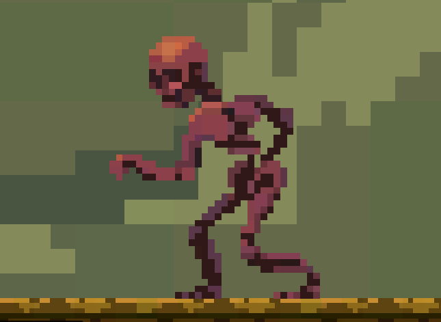
// Détection de collision avec le joueur
private void OnTriggerEnter2D(Collider2D collision)
{
// Vérifie si l'objet en collision a un script HeroStats
HeroStats heroStats = collision.gameObject.GetComponent<HeroStats>();
if (heroStats != null)
{
// Appelle la méthode TakeDamage pour infliger des dégâts
heroStats.TakeDamage(damage);
Debug.Log("Le joueur a subi " + damage + " points de dégâts.");
}
}
Vérification de la présence du script HeroStats : La première étape consiste à vérifier si l’objet avec lequel le squelette entre en collision est bien le joueur. Pour ce faire, on utilise la méthode GetComponent<HeroStats>(). Cela permet de récupérer le script HeroStats qui gère la vie du joueur. Si l’objet en collision n’est pas le joueur (par exemple, une autre entité), heroStats sera null et aucune action ne sera effectuée.
Infliger des dégâts : Si l’objet en collision possède un script HeroStats, cela signifie que c’est bien le joueur. On appelle alors la méthode TakeDamage(damage) pour réduire ses points de vie. La variable damage est définie dans le script du squelette et représente la quantité de dégâts que le joueur subit à chaque collision.
SpawnPointChanger
Nous allons maintenant introduire une nouvelle fonctionnalité dans notre jeu : les points de spawn dynamiques. Ces points permettent au joueur de changer son lieu de réapparition au fur et à mesure qu’il progresse dans les niveaux.
Le script SpawnPointChanger a été conçu pour gérer cette mécanique. À chaque fois que le joueur entre en collision avec un certain objet (comme un checkpoint), ce dernier change automatiquement son point de réapparition à un nouvel endroit prédéfini.
using UnityEngine;
public class SpawnPointChanger : MonoBehaviour
{
public Transform newSpawnPoint; // Nouveau point de spawn à définir pour le joueur
// Méthode déclenchée lors de la collision avec un objet (trigger)
private void OnTriggerEnter2D(Collider2D collision)
{
// Récupérer le script HeroStats du joueur en collision
HeroStats heroStats = collision.GetComponent<HeroStats>();
if (heroStats != null) // Si le joueur possède un script HeroStats
{
ChangeSpawnPoint(heroStats); // Changer le point de spawn du joueur
}
}
// Méthode pour changer le point de spawn du joueur
private void ChangeSpawnPoint(HeroStats heroStats)
{
if (newSpawnPoint != null) // Vérifie si le nouveau point de spawn est défini
{
heroStats.spawnPoint = newSpawnPoint; // Met à jour le point de spawn du joueur
Debug.Log("Nouveau spawn point défini pour le joueur : " + newSpawnPoint.position);
}
else
{
Debug.LogWarning("Aucun nouveau point de spawn défini !");
}
}
}
Variables
- public Transform newSpawnPoint;
- Cette variable stocke le nouveau point de réapparition pour le joueur. Elle est paramétrée depuis l’éditeur Unity et représente l’endroit où le joueur réapparaîtra après avoir été téléporté.
Méthode OnTriggerEnter2D
-
Cette méthode est automatiquement déclenchée lorsque l’objet auquel ce script est attaché entre en collision avec un autre objet dans le jeu. Ici, on détecte spécifiquement la collision avec le joueur.
-
HeroStats heroStats =
collision.GetComponent<HeroStats>();-
On utilise cette ligne pour vérifier si l’objet avec lequel il y a eu collision possède le script HeroStats. Si c’est le cas, cela signifie que l’objet est bien le joueur (car le joueur a ce script attaché).
-
ChangeSpawnPoint(heroStats);
- Si le joueur est détecté, la méthode ChangeSpawnPoint est appelée pour changer le point de réapparition du joueur.
-
Méthode ChangeSpawnPoint
-
if (newSpawnPoint != null)
- Avant de procéder, le script vérifie si la nouvelle position de réapparition est bien définie. Cela permet d’éviter des erreurs en cas d’oubli.
-
heroStats.spawnPoint = newSpawnPoint;
-
Cette ligne met à jour le point de réapparition du joueur avec la nouvelle position définie dans newSpawnPoint.
-
Debug.Log(“Nouveau spawn point défini pour le joueur : “ + newSpawnPoint.position);
- Un message est affiché dans la console pour confirmer que le point de réapparition a bien été mis à jour.
-
Résumé du fonctionnement
Ce script est utilisé dans les situations où vous souhaitez permettre au joueur de modifier son point de réapparition en atteignant certains points dans le niveau, comme des checkpoints.
Lorsqu’il entre en collision avec un objet spécifique (comme un checkpoint), son point de réapparition est mis à jour pour correspondre à une nouvelle position, permettant ainsi au joueur de réapparaître à cet endroit en cas de mort.
TeleportTrigger
Dans de nombreux jeux vidéo, surtout dans les genres de plateforme, il est courant que le joueur puisse tomber dans le vide. Pour éviter des frustrations dues à une mort injuste ou à un retour en arrière excessif, un système de téléportation est souvent mis en place. Ce script permet au joueur de réapparaître à un point de spawn prédéfini lorsqu’il entre en collision avec un trigger.
using UnityEngine;
public class TeleportTrigger : MonoBehaviour
{
// Détection du trigger lorsque le joueur entre dans la zone
private void OnTriggerEnter2D(Collider2D collision)
{
// Vérifie si l'objet qui entre en collision possède le script HeroStats
HeroStats heroStats = collision.GetComponent<HeroStats>();
if (heroStats != null) // Vérifie si le joueur a un script HeroStats attaché
{
TeleportPlayer(heroStats); // Téléporte le joueur à son spawnPoint
}
}
// Méthode pour téléporter le joueur à la position de son spawnPoint
private void TeleportPlayer(HeroStats heroStats)
{
if (heroStats.spawnPoint != null) // Vérifie que le spawnPoint est défini
{
heroStats.transform.position = heroStats.spawnPoint.position; // Téléporte le joueur au spawn
Debug.Log("Joueur téléporté au spawn point : " + heroStats.spawnPoint.position);
}
else
{
Debug.LogWarning("Aucun spawnPoint défini pour le joueur !");
}
}
}
Dans ce script, nous travaillons avec une zone de trigger, qui est une zone spéciale dans le jeu qui détecte les collisions avec d’autres objets. Lorsque le joueur entre dans cette zone, la méthode OnTriggerEnter2D est activée. Cette méthode vérifie si l’objet entrant a un script HeroStats attaché, ce qui nous permet de déterminer s’il s’agit bien du joueur.
Une fois que nous avons confirmé que c’est le joueur, nous appelons la méthode TeleportPlayer. Cette méthode change la position du joueur pour le téléporter à son point de spawn défini. Cela est particulièrement utile dans des situations comme la chute dans un vide, où nous voulons que le joueur réapparaisse à un endroit sûr sans avoir à redémarrer le niveau.
Introduction au Canvas dans Unity
Le Canvas est un élément fondamental dans Unity pour gérer les interfaces utilisateur (UI). Il agit comme un conteneur qui peut contenir tous les éléments UI, tels que les boutons, les textes, et bien sûr, les barres de vie. Le Canvas gère le rendu de ces éléments à l’écran, leur permettant d’interagir avec le joueur en fonction des événements du jeu.
-
Les types de Canvas
-
Screen Space - Overlay : C’est le mode par défaut. Les éléments UI sont affichés directement au-dessus de la scène et s’ajustent automatiquement à la taille de l’écran.
-
Screen Space - Camera : Dans ce mode, le Canvas est lié à une caméra spécifique. Les éléments UI apparaissent dans l’espace de la caméra, ce qui permet une perspective différente, notamment pour les jeux 3D.
-
World Space : Ce mode permet d’intégrer les éléments UI dans l’environnement 3D. Cela signifie que les éléments UI se comportent comme des objets 3D dans le monde du jeu, pouvant être déplacés et interagir avec d’autres objets.
-
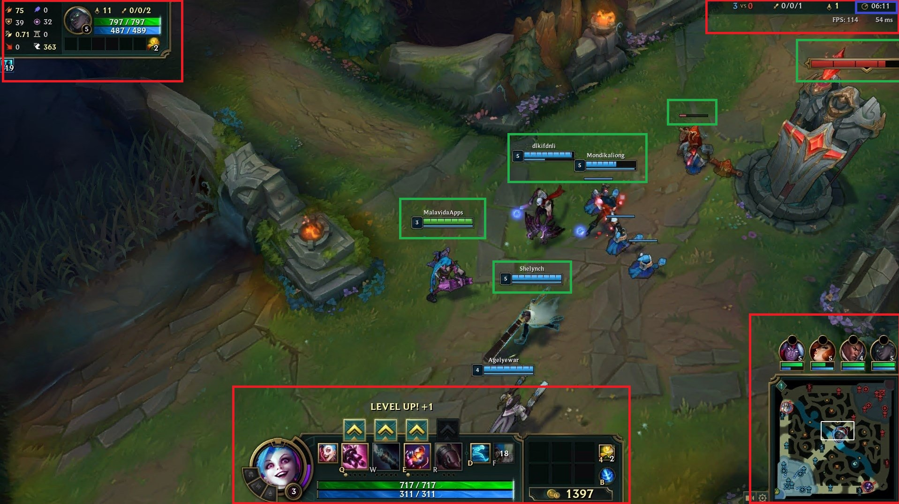
Le Canvas dans Unity est un outil polyvalent utilisé pour créer une variété d’interfaces utilisateur (UI) dans les jeux. Voici quelques exemples d’utilisation courante du Canvas :
-
Menus de Jeu : Les menus principaux, les options, et les écrans de pause sont souvent créés avec le Canvas. Cela inclut des éléments comme des boutons pour démarrer le jeu, charger une partie, ou ajuster les paramètres audio et visuels. Les menus peuvent également contenir des animations pour une expérience utilisateur plus fluide et engageante.
-
Barres de Vie et Statistiques : Comme mentionné précédemment, les barres de vie pour les personnages ou les ennemis sont couramment affichées sur le Canvas. De plus, les informations telles que l’énergie, le mana, ou d’autres statistiques peuvent être affichées à l’aide de sliders ou d’autres éléments graphiques.
-
HUD (Heads-Up Display) : Un HUD est souvent intégré dans le Canvas pour afficher des informations critiques pendant le jeu. Cela peut inclure la santé du joueur, le score, les munitions restantes, ou des notifications de missions en cours.
-
Notifications et Indicateurs : Les notifications contextuelles, comme des alertes ou des conseils pour le joueur, peuvent être affichées à l’aide d’éléments UI sur le Canvas. Cela permet de guider le joueur sans interrompre le flux de jeu.
-
Écrans de Chargement : Lorsqu’un jeu passe d’une scène à une autre, un écran de chargement peut être affiché via le Canvas. Cela peut inclure des animations, des pourcentages de progression, ou des conseils sur le jeu.
-
Systèmes de Dialogue : Dans les jeux d’aventure ou de rôle, le Canvas est souvent utilisé pour afficher les dialogues entre personnages, permettant au joueur d’interagir et de choisir des réponses.
-
Inventaires et Écrans de Gestion : Les systèmes d’inventaire, où les joueurs peuvent voir, utiliser ou échanger des objets, sont généralement créés à l’aide du Canvas. Cela peut inclure des grilles, des boutons d’utilisation, et des descriptions d’objets.
Ces exemples montrent la flexibilité et l’importance du Canvas dans la conception d’interfaces utilisateur interactives et attrayantes dans Unity. Pour plus de détails sur les éléments UI et le Canvas dans Unity, consultez la documentation officielle d’Unity.
Création d’une Barre de Vie
Pour créer une barre de vie, nous allons utiliser le Canvas dans le mode Screen Space - Overlay. Voici les étapes de base :
-
Créer un Canvas : Dans Unity, faites un clic droit dans la hiérarchie, puis sélectionnez UI > Canvas. Cela créera un nouvel objet Canvas dans votre scène.
-
Ajouter une Barre de Vie : Faites un clic droit sur le Canvas et sélectionnez UI > Slider pour créer une barre de vie. Le Slider agira comme la barre de vie où nous pourrons ajuster la valeur en fonction des points de vie du personnage.
-
Personnaliser le Slider : Dans l’inspecteur, vous pouvez modifier les propriétés du Slider, telles que le minimum et le maximum. Pour une barre de vie, vous pouvez définir le minimum à 0 et le maximum à la santé maximale du joueur.
-
Ajouter du Texte : Pour afficher les points de vie actuels et max, vous pouvez ajouter un élément Text (ou TextMeshPro pour une meilleure qualité de texte) en tant qu’enfant du Canvas.
Cette configuration vous permettra de visualiser les points de vie du joueur en temps réel, créant ainsi une expérience plus immersive pour le joueur.
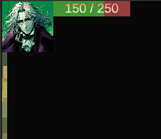
using UnityEngine;
using UnityEngine.UI;
using TMPro;
public class HpBarUi : MonoBehaviour
{
#region Singleton
public static HpBarUi instance;
private void Awake()
{
if (instance != null)
{
Debug.LogError("Il y a déjà un HpBarUi dans la scène !");
Destroy(gameObject);
return;
}
instance = this;
}
#endregion
// Référence au slider de la barre de vie
public Slider hpSlider;
// Référence au texte affichant les points de vie (avec TextMeshPro)
public TextMeshProUGUI hpText;
// Méthode pour mettre à jour la barre de vie et le texte
public void SetHpBarValue(int hp, int hpMax)
{
// Met à jour la valeur du slider
hpSlider.value = (float)hp / hpMax;
// Met à jour le texte avec le format "hp/hpMax"
hpText.text = hp + " / " + hpMax;
}
}
Le script HpBarUi gère l’affichage de la barre de vie du joueur dans l’interface utilisateur. Il utilise un modèle singleton pour garantir une seule instance dans la scène. Il possède des références à un Slider pour la barre de vie et un texte affichant les points de vie. La méthode SetHpBarValue met à jour le slider et le texte en fonction des points de vie actuels et maximaux, offrant ainsi une visualisation en temps réel de la santé du personnage.
Création du menu principal
Il est maintenant temps de passer à la création d’un menu principal pour notre jeu. Nous allons créer un menu simple avec deux boutons : “Play” pour démarrer le jeu et “Exit” pour quitter.

Voici les étapes détaillées :
-
Créer une nouvelle scène : Dans Unity, allez dans le menu File > New Scene et enregistrez-la sous le nom MainMenu. Cette scène sera dédiée à l’interface de menu principal.
-
Ajouter la scène au Build Settings : Pour que cette scène soit lancée en premier lorsque le jeu démarre, ouvrez le Build Settings (menu File > Build Settings) et ajoutez votre nouvelle scène MainMenu en cliquant sur Add Open Scenes. Assurez-vous qu’elle soit en première position dans la liste.
-
Créer le Canvas pour le Menu Principal : Faites un clic droit dans la hiérarchie et choisissez UI > Canvas. Renommez ce canvas en MainMenuCanvas. Ce canvas contiendra tous les éléments du menu.
-
Ajouter une Image de Fond : Faites un clic droit sur le Canvas et choisissez UI > Image. Étirez cette image pour qu’elle prenne toute la place sur le Canvas en cliquant sur l’option Stretch dans l’inspecteur. Cette image pourra servir de fond pour le menu.
-
Ajouter un Layout Vertical : Sélectionnez l’image de fond dans la hiérarchie et, dans l’inspecteur, ajoutez un composant Vertical Layout Group. Ce composant permet d’organiser facilement les éléments enfants verticalement.
-
Ajouter le Titre et les Boutons :
-
Titre : Faites un clic droit sur l’image de fond et choisissez UI > Text. Ce texte représentera le titre de votre jeu. Modifiez le texte et la police selon vos préférences (par exemple : “Titre du Jeu”).
-
Boutons : Faites un clic droit sur l’image de fond et ajoutez deux boutons (UI > Button). Renommez le texte des boutons en “Play” pour démarrer le jeu et “Exit” pour quitter l’application.
-
MainMenu
Nous allons créer un script appelé MainMenu, qui aura pour fonction principale de gérer les interactions de base du menu principal de notre jeu. Ce script comportera deux méthodes essentielles : l’une pour quitter le jeu et l’autre pour charger la première scène du jeu.
private bool isLoading = false; // Empêche de lancer plusieurs chargements en même temps
public string levelToLoad; // Le nom du niveau à charger, paramétré dans l'Inspector
Dans notre script MainMenu, nous avons deux variables essentielles :
-
private bool isLoading = false;
- Cette variable sert à indiquer si un chargement de scène est en cours. En la définissant sur true lorsqu’un chargement commence, nous empêchons les utilisateurs de déclencher plusieurs chargements simultanément. Cela évite les conflits qui pourraient survenir si l’utilisateur tente de charger un niveau pendant qu’un autre est déjà en cours.
-
public string levelToLoad;
- Cette variable stocke le nom du niveau à charger, qui peut être configuré directement dans l’Inspector de Unity. En rendant cette variable publique, nous permettons aux développeurs de spécifier facilement quel niveau doit être chargé lorsque l’utilisateur clique sur le bouton “Jouer”. Cela simplifie la gestion des différentes scènes du jeu et rend le script plus flexible.
// Méthode pour quitter l'application
public void Exit()
{
if (!isLoading) // Si le chargement n'est pas en cours, on peut quitter
{
Debug.Log("Quitter l'application.");
Application.Quit(); // Quitte l'application (fonctionne dans une build, pas dans l'éditeur)
}
}
La méthode Exit dans ce script est utilisée pour quitter l’application lorsque le joueur clique sur le bouton correspondant dans le menu principal. Elle vérifie d’abord que le chargement d’une scène n’est pas déjà en cours (!isLoading), pour éviter des conflits.
Si la condition est respectée, le message “Quitter l’application.” est affiché dans la console avec Debug.Log, puis Application.Quit() est appelé pour fermer l’application. Il est important de noter que Application.Quit() ne fonctionne que dans une version buildée du jeu, pas dans l’éditeur Unity. Cela permet d’assurer un comportement propre lors de la fermeture du jeu.
// Méthode pour lancer le niveau spécifié de manière asynchrone
public void Play()
{
if (!isLoading && !string.IsNullOrEmpty(levelToLoad)) // Si le chargement n'est pas déjà en cours et que le nom de la scène est spécifié
{
Debug.Log("Lancement du niveau : " + levelToLoad);
StartCoroutine(LoadLevelAsync(levelToLoad)); // Charge le niveau spécifié
}
else if (string.IsNullOrEmpty(levelToLoad))
{
Debug.LogWarning("Aucun niveau à charger n'a été spécifié !");
}
}
// Coroutine pour charger la scène de manière asynchrone avec une string
IEnumerator LoadLevelAsync(string sceneName)
{
isLoading = true; // Bloque l'accès aux méthodes pendant le chargement
// Commence à charger la scène asynchrone
AsyncOperation asyncLoad = SceneManager.LoadSceneAsync(sceneName);
// Tant que la scène n'est pas complètement chargée, affiche la progression dans la console
while (!asyncLoad.isDone)
{
float progress = Mathf.Clamp01(asyncLoad.progress / 0.9f); // Normalise la progression entre 0 et 1
Debug.Log("Chargement en cours : " + (progress * 100f) + "%");
yield return null; // Attend la prochaine frame avant de continuer
}
Debug.Log("Niveau " + sceneName + " chargé !");
isLoading = false; // Réactive les méthodes une fois le chargement terminé
}
La méthode Play sert à lancer le jeu en chargeant un nouveau niveau, spécifié dans l’Inspector via la variable levelToLoad. Comme pour Exit, elle commence par vérifier que le chargement d’une scène n’est pas déjà en cours et que le nom de la scène à charger n’est pas vide.
Si toutes les conditions sont réunies, elle démarre une coroutine (StartCoroutine(LoadLevelAsync(levelToLoad))) pour charger le niveau de manière asynchrone, ce qui permet de continuer à exécuter d’autres tâches pendant le chargement de la scène. Si levelToLoad n’a pas été défini, un avertissement est affiché dans la console avec Debug.LogWarning.
La méthode LoadLevelAsync se charge ensuite du processus de chargement lui-même, en suivant l’avancement avec une barre de progression virtuelle qui affiche les pourcentages dans la console jusqu’à ce que le niveau soit complètement chargé.
Coroutines
Les coroutines en Unity sont des méthodes spéciales qui permettent d’exécuter des actions sur plusieurs frames, ce qui est particulièrement utile pour gérer des opérations asynchrones ou des animations sans bloquer le fil d’exécution principal du jeu.
Contrairement aux méthodes classiques qui s’exécutent jusqu’à leur fin, les coroutines peuvent être suspendues à des moments spécifiques et reprises plus tard, ce qui permet de créer des comportements fluides.
using UnityEngine;
using System.Collections;
public class BlinkingObject : MonoBehaviour
{
public float blinkDuration = 1f; // Durée entre chaque clignotement
private Renderer objectRenderer;
void Start()
{
objectRenderer = GetComponent<Renderer>();
StartCoroutine(Blink());
}
private IEnumerator Blink()
{
while (true) // Boucle infinie pour le clignotement
{
objectRenderer.enabled = !objectRenderer.enabled; // Alterne l'état de visibilité
yield return new WaitForSeconds(blinkDuration); // Attend avant de clignoter à nouveau
}
}
}
Création d’un Menu de Pause
Bien maintenant, nous voulons créer un moyen de passer du jeu au menu principal afin de quitter le jeu. Pour cela, débutons par ajouter au canvas un menu de pause avec marqué “Pause” et un bouton “Exit”.

Procédure d’Ajout au Canvas
-
Ajouter une Image d’Arrière-Plan :
- Faites un clic droit sur le Canvas, puis sélectionnez UI > Image.
- Renommez l’image en BackgroundImage. Modifiez ses propriétés pour qu’elle couvre tout le canvas (Position à 0,0 et Width/Height à 0 pour l’étirer). Changez la couleur à noir et l’opacité à 0.5 pour un effet transparent.
-
Ajouter le Texte “Pause” :
- Faites un clic droit sur l’image d’arrière-plan et sélectionnez UI > Text (ou TextMeshPro).
- Renommez le texte en PauseText, et dans l’inspecteur, modifiez-le pour afficher “Pause”. Ajustez la taille de police et la couleur pour qu’il soit bien visible.
-
Ajouter un Bouton “Exit” :
- Faites un clic droit sur l’image d’arrière-plan et sélectionnez UI > Button.
- Renommez ce bouton en ExitButton. Changez le texte en “Exit” et positionnez-le sous le texte “Pause”.
Création d’un script MenuPause
Dans ce script MenuPause, nous allons implémenter un système de pause pour notre jeu. Ce système permettra au joueur de mettre le jeu en pause en appuyant sur la touche Échap, d’afficher un menu de pause, et de retourner au menu principal. Le script gère également la mise à jour du temps du jeu, arrêtant et reprenant le temps selon l’état de pause.
LoadMainMenu()
// Méthode pour retourner au menu principal
public void LoadMainMenu()
{
Time.timeScale = 1f; // S'assure que le temps n'est plus en pause
SceneManager.LoadScene("MainMenu"); // Charge la scène du menu principal
}
Cette méthode permet de retourner au menu principal en s’assurant que le temps du jeu est repris avant de charger la scène correspondante. Elle utilise SceneManager.LoadScene(“MainMenu”) pour changer de scène.
public GameObject pauseMenuUI; // Référence à l'UI du menu de pause
private bool isPaused = false; // État du jeu (en pause ou non)
Variables
-
public GameObject pauseMenuUI: Cette variable référence l’interface utilisateur du menu de pause que nous avons créée précédemment. Elle sera activée ou désactivée selon que le jeu est en pause ou non.
-
private bool isPaused: Un booléen qui détermine si le jeu est en pause (true) ou non (false).
PauseGame()
// Méthode pour mettre en pause le jeu
public void PauseGame()
{
pauseMenuUI.SetActive(true); // Affiche le menu de pause
Time.timeScale = 0f; // Arrête le temps dans le jeu
isPaused = true; // Met à jour l'état de pause
}
La méthode PauseGame() est responsable de mettre le jeu en pause et d’afficher le menu de pause. Voici les étapes détaillées :
-
Affichage du menu de pause :
- Cette ligne active le menu de pause en modifiant la propriété SetActive de l’objet pauseMenuUI. Cela rend l’interface utilisateur visible à l’écran, permettant au joueur de voir qu’il est en pause.
-
Arrêt du temps :
- En définissant Time.timeScale à 0, tous les éléments du jeu qui dépendent du temps (comme les mouvements, les animations et les effets de physique) sont suspendus. Cela crée l’effet de pause, permettant au joueur de réfléchir ou de faire des choix sans pression.
-
Mise à jour de l’état de pause :
- Cette ligne met à jour la variable isPaused pour indiquer que le jeu est maintenant en pause. Cela peut être utile pour d’autres méthodes ou logiques de jeu qui doivent connaître l’état actuel du jeu.
Par défaut, notre image dans le Canvas est désactivée. Vous pouvez la désactiver en décochant la case correspondante dans l’inspecteur. Cependant, il est important de noter qu’une fois désactivée, la méthode Update() de cet objet ou de ses enfants ne s’exécute plus.
Pour garantir que le script continue à fonctionner, placez-le en dehors du panel qui sera activé et désactivé. Cela permet de maintenir le contrôle du jeu, même lorsque le menu de pause est masqué.

ResumeGame()
// Méthode pour reprendre le jeu
public void ResumeGame()
{
pauseMenuUI.SetActive(false); // Cache le menu de pause
Time.timeScale = 1f; // Reprend le temps dans le jeu
isPaused = false; // Met à jour l'état de pause
}
La méthode ResumeGame() est utilisée pour reprendre le jeu après une pause.
Voici les détails :
-
Masquage du menu de pause :
- Cette ligne désactive le menu de pause, rendant l’interface utilisateur invisible à l’écran. Cela indique au joueur qu’il reprend le jeu.
-
Reprise du temps :
- En définissant Time.timeScale à 1, le jeu reprend son rythme normal. Tous les éléments du jeu recommencent à fonctionner comme prévu, permettant au joueur de continuer à jouer.
-
Mise à jour de l’état de pause :
- Cette ligne met à jour isPaused pour indiquer que le jeu n’est plus en pause. Cela peut être important pour d’autres parties du code qui doivent savoir si le jeu est actif ou non.
void Update()
{
// Vérifie si la touche Échap est pressée
if (Input.GetKeyDown(KeyCode.Escape))
{
if (isPaused)
{
ResumeGame(); // Si le jeu est en pause, on reprend le jeu
}
else
{
PauseGame(); // Sinon, on met en pause
}
}
}
La méthode Update() vérifie chaque image si la touche Échap est pressée. Si le jeu est en pause, elle appelle ResumeGame() pour reprendre le jeu, sinon, elle appelle PauseGame() pour mettre le jeu en pause.
Exportation et publication
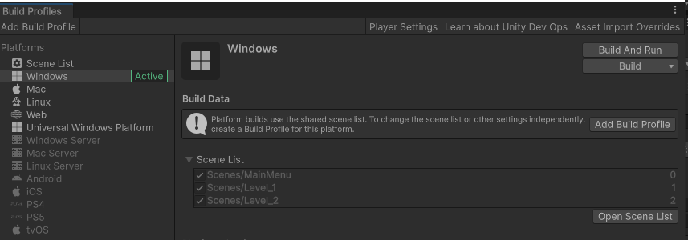
Bien, il est temps maintenant de créer un exécutable que vous pourrez partager. Pour cela, ouvrez le Build Settings et sélectionnez Windows comme plateforme. Ensuite, cliquez sur Build et choisissez un dossier où vous souhaitez enregistrer votre jeu, en lui donnant un nom représentatif, par exemple, le nom de votre jeu.
Une fois la compilation terminée, n’oubliez pas de lancer l’exécutable pour tester votre jeu. Félicitations, vous venez de créer votre premier jeu avec Unity ! Si vous avez déjà utilisé le moteur, vous savez à quel point cette étape est gratifiante. Maintenant, c’est à vous de jouer et de créer ce que vous désirez.
Merci d’avoir suivi mon premier cours sur Unity, et à bientôt pour d’autres explorations et découvertes dans le monde du développement de jeux !
Documentation
La documentation Unity est une ressource essentielle pour les développeurs souhaitant explorer et maîtriser l’éditeur Unity, ainsi que ses diverses fonctionnalités. Elle offre des guides et des manuels sur la création de jeux 2D et 3D, la gestion des assets, le scripting, et bien plus encore. Les utilisateurs peuvent accéder à des références API pour le développement de scripts et des tutoriels sur l’utilisation des services de jeu intégrés.
https://docs.unity.com/
La chaîne YouTube TUTO UNITY FR propose des tutoriels en français sur Unity, adaptés aux débutants et aux développeurs plus avancés. Les vidéos couvrent divers aspects du développement de jeux, comme la programmation, la création d’environnements, et l’animation. Les utilisateurs peuvent y trouver des explications claires et des démonstrations pratiques pour améliorer leurs compétences sur Unity.
https://www.youtube.com/@TUTOUNITYFR
OpenGameArt est une plateforme qui fournit des ressources artistiques gratuites pour les développeurs de jeux. Elle propose une vaste collection d’assets, tels que des sprites, des modèles 3D, des sons et de la musique, le tout sous différentes licences. Les utilisateurs peuvent télécharger des ressources et même contribuer en partageant leurs propres créations. Cela permet de favoriser la collaboration et d’aider les développeurs à enrichir leurs projets sans frais.
https://opengameart.org/
Mixamo, une plateforme d’Adobe, offre des animations et des modèles 3D pour les développeurs de jeux. Elle permet aux utilisateurs de personnaliser des personnages animés, d’ajouter des mouvements, et de les exporter dans divers formats compatibles avec des moteurs de jeu comme Unity et Unreal Engine. Avec une interface conviviale, Mixamo facilite le processus d’animation sans nécessiter de compétences techniques avancées.
https://www.mixamo.com/
Meshy.ai est une plateforme qui permet de créer et de personnaliser facilement des modèles 3D. Elle offre une variété d’actifs et de modèles prédéfinis, ce qui facilite la conception unique pour les utilisateurs débutants et expérimentés. L’interface intuitive et les outils puissants encouragent la créativité sans nécessiter de compétences techniques avancées.
https://www.meshy.ai/discover
Suno.com propose des outils d’IA pour générer des modèles audio personnalisés. Sa plateforme permet aux utilisateurs de créer des compositions musicales uniques, d’expérimenter avec différents styles et d’intégrer des voix synthétiques. L’interface est conçue pour être accessible aux créateurs de tous niveaux, favorisant ainsi la créativité dans la production audio.
https://suno.com/
L’Asset Store de Unity propose une vaste bibliothèque de ressources pour les développeurs, comprenant des modèles 3D, des textures, des scripts, et des outils pour améliorer le développement de jeux. Les utilisateurs peuvent acheter ou télécharger gratuitement des actifs pour accélérer leur projet. La plateforme facilite la recherche et l’intégration d’éléments variés pour enrichir l’expérience de jeu.
https://assetstore.unity.com/
Bing Image Creator permet de générer des images basées sur des descriptions textuelles grâce à une IA. En entrant une description, l’outil transforme cette dernière en image visuelle unique. C’est un outil pratique pour les créateurs souhaitant illustrer rapidement leurs idées sans avoir à les dessiner eux-mêmes.
https://www.bing.com/images/create
Stable Diffusion est un modèle d’intelligence artificielle conçu pour générer des images à partir de descriptions textuelles. Il fonctionne en utilisant une technique de “diffusion” qui permet de créer des images réalistes ou artistiques à partir de textes simples. Stable Diffusion est très populaire dans le domaine de l’art généré par l’IA, et il offre de nombreuses options pour contrôler le style, le contenu et la qualité des images créées. Il est également largement utilisé dans des interfaces utilisateur comme celles hébergées sur GitHub ou d’autres outils en ligne.
https://github.com/AUTOMATIC1111/stable-diffusion-webui
La chaîne YouTube Gabriel Aguiar Prod. propose des tutoriels et des ressources pour les développeurs de jeux vidéo utilisant Unity. Gabriel Aguiar partage des guides détaillés sur la création d’effets visuels (VFX), des animations et des shaders, ainsi que des astuces pour améliorer la performance et l’apparence des jeux. Ses vidéos sont adaptées aux débutants comme aux utilisateurs avancés souhaitant approfondir leurs compétences dans le développement de jeux, en particulier dans le domaine des effets visuels en temps réel.
https://www.youtube.com/@GabrielAguiarProd
La page de ChatGPT sur OpenAI présente les capacités de ce modèle d’IA, conçu pour générer des réponses textuelles similaires à celles d’un humain. Il est utilisé pour une large gamme d’applications, telles que les conversations, l’aide à la programmation, la création de contenu, et plus encore.
https://openai.com/chatgpt/
Les bases de Unity – Lexique
Unity
Unity est un moteur de jeux vidéo très populaire, utilisé pour créer des jeux en 2D, 3D, réalité augmentée (AR) ou réalité virtuelle (VR). Il offre des outils et des services permettant de développer rapidement des jeux pour de nombreuses plateformes (PC, mobile, console, etc.), avec un environnement simple à prendre en main pour les débutants comme pour les professionnels.
Moteur de Jeux
Un moteur de jeux est un ensemble d’outils et de technologies qui facilitent la création de jeux vidéo. Dans Unity, le moteur gère la physique, les graphiques, l’intelligence artificielle et d’autres aspects essentiels du gameplay, permettant aux développeurs de se concentrer sur les éléments créatifs sans avoir à tout coder depuis zéro.
Unity Hub
Unity Hub est une application qui centralise la gestion des différentes versions de Unity et des projets que vous développez. Il permet de créer, ouvrir, et gérer vos projets, de télécharger différentes versions du moteur Unity, et d’accéder à des ressources et didacticiels. C’est l’interface de départ pour tout utilisateur de Unity.
Éditeur
L’éditeur Unity est l’environnement principal où le développement de jeux a lieu. Il inclut différents panneaux comme la scène, la hiérarchie et l’inspecteur, qui permettent de manipuler les objets du jeu, de créer des scripts, d’ajouter des effets, de tester le jeu en temps réel, et d’exporter le jeu une fois terminé.
Scène
Une scène dans Unity est comme une “page” dans un livre de jeu. C’est là où tout le contenu du jeu est placé : les personnages, les objets, la caméra, la lumière, etc. Un jeu peut être composé de plusieurs scènes, comme un niveau de jeu, un menu ou une cinématique.
Hiérarchie
Le panneau de hiérarchie affiche une vue organisée de tous les objets présents dans une scène. Les objets sont représentés sous forme d’arborescence, et chaque élément de la hiérarchie peut être un parent ou un enfant d’un autre objet, ce qui est utile pour organiser les éléments du jeu en groupes logiques.
GameObject
Un GameObject est l’entité de base dans Unity. C’est un conteneur qui peut représenter n’importe quoi dans une scène, comme un personnage, une caméra, une lumière ou un simple cube. Chaque GameObject peut contenir différents composants qui ajoutent des fonctionnalités, comme des scripts pour définir son comportement ou des rendus pour afficher des images.
Inspector
Le panneau Inspector montre les propriétés et paramètres du GameObject sélectionné. Il permet de modifier les composants attachés à l’objet, comme les scripts, la physique, ou l’apparence visuelle. C’est l’endroit où vous ajustez les détails de chaque GameObject pour influencer leur comportement dans le jeu.
Component/Script
Un composant dans Unity est un module qui ajoute des fonctionnalités à un GameObject. Un script est un type particulier de composant, qui est un bout de code écrit en C# et qui définit le comportement spécifique d’un GameObject. Par exemple, un script peut indiquer à un objet de bouger, de détecter des collisions, ou d’interagir avec le joueur.
Assets
Les assets sont les ressources utilisées dans le jeu, comme les modèles 3D, les textures, les sons, les animations, ou les scripts. Unity les stocke dans un dossier spécial du projet, et ils peuvent être importés ou créés directement dans l’éditeur. Les assets sont ensuite assignés à des GameObjects pour créer les éléments visuels et interactifs du jeu.
MonoBehaviour
MonoBehaviour est la classe de base à partir de laquelle tous les scripts Unity dérivent. Lorsqu’un script hérite de MonoBehaviour, il peut être attaché à un GameObject dans Unity et répondre à des événements de jeu comme le démarrage d’un niveau, les mises à jour à chaque image, ou les interactions avec d’autres objets.
C#
C# (prononcé “C-sharp”) est le langage de programmation utilisé dans Unity pour écrire des scripts. C’est un langage moderne, orienté objet, qui permet de définir le comportement des objets dans un jeu, d’interagir avec les composants Unity et de contrôler la logique du jeu.
Variables
Les variables sont des conteneurs de données dans un script qui stockent des informations comme les scores, la position d’un joueur, la santé, ou les paramètres d’un objet. Dans Unity, les variables peuvent être définies et modifiées pour ajuster le comportement d’un GameObject.
Méthodes
Les méthodes sont des blocs de code qui effectuent des actions spécifiques. En C#, les méthodes peuvent être appelées pour exécuter une série d’instructions, comme déplacer un objet, jouer un son, ou détecter une collision. Elles permettent de structurer et d’organiser le code.
Start()
Start() est une méthode spéciale dans Unity, appelée une seule fois au début de la vie d’un script ou d’un objet dans une scène. C’est souvent utilisé pour initialiser les variables ou définir l’état de départ d’un GameObject.
Update()
Update() est une méthode appelée à chaque frame (image) du jeu, tant que le script est actif. Elle est utilisée pour gérer des actions qui doivent être mises à jour régulièrement, comme le déplacement d’un personnage ou la détection des entrées de l’utilisateur.
Input
Input fait référence aux interactions de l’utilisateur avec le jeu, comme l’appui sur une touche, le mouvement de la souris, ou l’utilisation d’une manette. Unity fournit des classes spéciales pour capturer ces interactions et permettre au jeu de réagir aux actions des joueurs.
Sprites
Les sprites sont des images 2D utilisées pour représenter des objets dans les jeux 2D. Ils peuvent être des personnages, des objets, ou des éléments de décor. Unity dispose d’outils pour gérer les sprites, comme les animer ou les modifier directement dans l’éditeur.
Tilemap
Tilemap est un système dans Unity qui permet de créer des mondes en 2D en disposant des tuiles (ou blocs) sur une grille. Il est couramment utilisé pour les jeux de plateformes ou les RPG, où les niveaux peuvent être construits rapidement à partir de petites images répétitives.
Animator
L’Animator est un composant qui contrôle les animations dans Unity. Il permet de définir des transitions entre différentes animations (par exemple, marcher, sauter, courir), et de les relier à des événements ou des conditions spécifiques dans le jeu.
Collider
Un Collider est un composant ajouté à un GameObject pour gérer les collisions physiques dans Unity. Il définit la forme de l’objet pour que le moteur de physique sache quand cet objet entre en contact avec un autre, mais n’ajoute pas de mouvement à lui seul.
Collider trigger
Un Collider Trigger est un type spécial de Collider qui ne bloque pas les objets, mais détecte simplement quand un autre objet entre dans sa zone. Il est souvent utilisé pour déclencher des événements dans un jeu, comme ouvrir une porte ou démarrer une cinématique.
OnTriggerEnter()
OnTriggerEnter() est une méthode qui est appelée lorsqu’un Collider avec le paramètre “Is Trigger” activé entre en contact avec un autre Collider. Cela permet aux développeurs de déclencher des événements lorsqu’un objet entre dans une zone définie, comme activer un événement ou lancer une animation.
Rigidbody
Le Rigidbody est un composant utilisé pour donner à un GameObject un comportement physique réaliste dans Unity. Il permet à l’objet d’être affecté par des forces comme la gravité et les collisions. Les objets avec un Rigidbody peuvent être déplacés de manière plus naturelle grâce à la simulation de la physique.
SpriteRenderer
Le SpriteRenderer est un composant qui permet d’afficher des sprites 2D dans Unity. Il définit comment un sprite est rendu à l’écran, y compris ses propriétés comme la couleur, le tri par ordre de rendu, et les effets de transparence. Grâce à ce composant, les développeurs peuvent facilement gérer l’affichage des graphiques 2D dans leurs jeux.
InputManager
L’InputManager est un système de gestion des entrées dans Unity, permettant de définir les actions que les joueurs peuvent effectuer via le clavier, la souris ou une manette. Il permet de créer des mappages d’entrée personnalisés pour gérer les différentes commandes et de centraliser la gestion des interactions utilisateur.
GetComponent()
GetComponent() est une méthode utilisée dans les scripts Unity pour accéder à un autre composant attaché à un GameObject. Par exemple, si un script a besoin d’accéder aux propriétés d’un Rigidbody ou d’un SpriteRenderer, il peut appeler GetComponent<Rigidbody>() pour obtenir ce composant. Cela permet une meilleure organisation et modularité dans le code.
Time.deltaTime
Time.deltaTime est une propriété qui renvoie le temps écoulé depuis la dernière frame, en secondes.En utilisant Time.deltaTime, les développeurs peuvent rendre les mouvements et les animations indépendants de la fréquence d’images, assurant ainsi que le gameplay reste fluide et cohérent sur toutes les plateformes, peu importe le matériel.
Tag (gameObject)
Les Tags sont des étiquettes attribuées aux GameObjects dans Unity, permettant de les identifier facilement dans le code. Par exemple, un GameObject peut être étiqueté comme “Player” ou “Enemy”. Les développeurs peuvent utiliser ces tags pour effectuer des opérations spécifiques, comme détecter des collisions ou interagir avec d’autres objets basés sur leur étiquette.
Layer (gameObject)
Les Layers sont des catégories utilisées pour organiser les GameObjects dans Unity. Chaque GameObject peut être assigné à une Layer, permettant ainsi de contrôler la manière dont les objets interagissent avec d’autres objets dans le jeu, en particulier pour les systèmes de collision et le rendu. Par exemple, on peut créer des Layers spécifiques pour les objets qui doivent être ignorés par certaines caméras.
Gizmos
Les Gizmos sont des outils visuels qui aident les développeurs à visualiser des éléments dans l’éditeur Unity. Ils ne sont pas visibles lors de l’exécution du jeu, mais permettent de dessiner des formes ou des lignes pour représenter des objets, des trajectoires, ou des zones de détection. Les Gizmos facilitent la conception et le débogage des scènes.
Waypoint
Les Waypoints sont des points prédéfinis dans un espace de jeu que les objets, comme les ennemis ou les véhicules, peuvent utiliser pour naviguer. En programmant un GameObject pour se déplacer d’un waypoint à un autre, les développeurs peuvent créer des chemins de mouvement intelligents, comme des patrouilles d’ennemis.
PreFab
Un Prefab est un modèle de GameObject sauvegardé dans Unity, permettant de créer des instances de cet objet facilement. Les Prefabs peuvent contenir des composants, des propriétés et des comportements, ce qui permet aux développeurs de réutiliser des objets sans avoir à les recréer à chaque fois. Cela simplifie la gestion et l’organisation des assets dans un projet.
Build Settings
Build Settings est une fenêtre dans Unity qui permet de configurer les paramètres de construction pour un projet. Les développeurs peuvent choisir la plateforme cible (comme Windows, macOS, Android, etc.), ajouter des scènes à inclure dans la construction, et configurer d’autres options pour personnaliser le comportement du jeu lors de son déploiement.
SpawnPoint
Un SpawnPoint est un emplacement spécifique dans le jeu où un nouvel objet ou un personnage peut apparaître (ou “spawner”). Les SpawnPoints sont souvent utilisés pour faire réapparaître des ennemis, générer des items, ou introduire des personnages au début d’un niveau.
Debug.Log()
Debug.Log() est une méthode utilisée pour afficher des messages dans la console d’Unity. Cela aide les développeurs à déboguer leurs scripts en leur permettant de suivre l’exécution du code, de vérifier les valeurs des variables ou de comprendre le flux logique de leur programme. Les messages apparaissent pendant le mode de jeu et peuvent être très utiles pour le diagnostic.
Canvas
Le Canvas est un composant essentiel dans Unity pour le développement d’interfaces utilisateur (UI). Il sert de conteneur pour tous les éléments UI, tels que les boutons, les images, et les textes. Le Canvas gère le rendu et l’organisation de ces éléments dans l’espace de jeu, et il permet aux développeurs de concevoir des interfaces réactives et adaptatives.